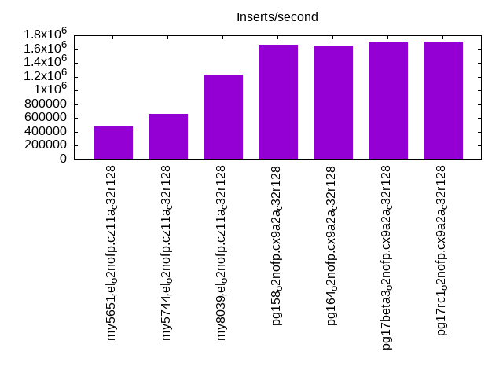
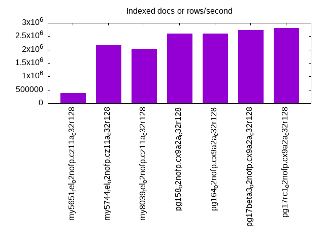
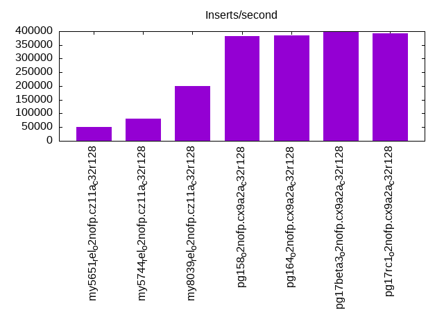
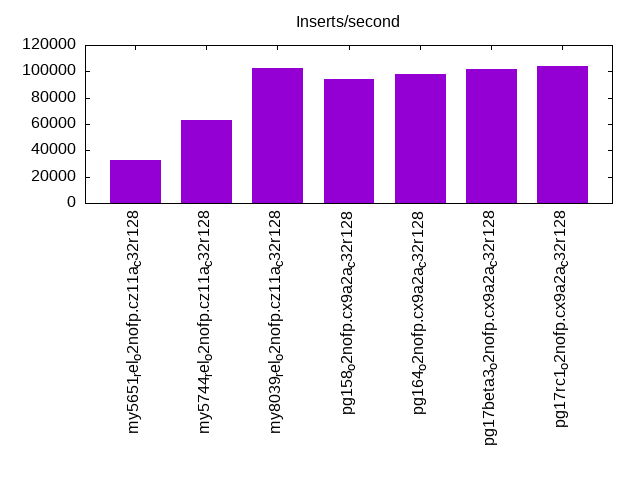
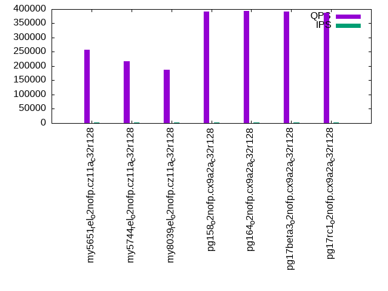
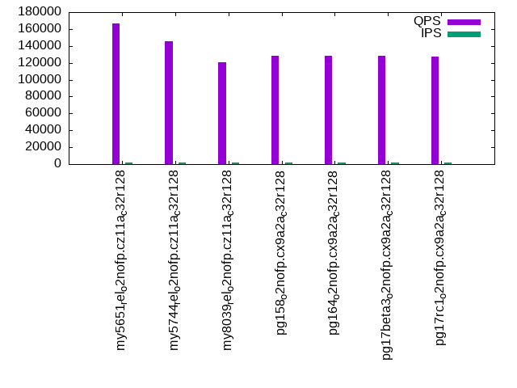
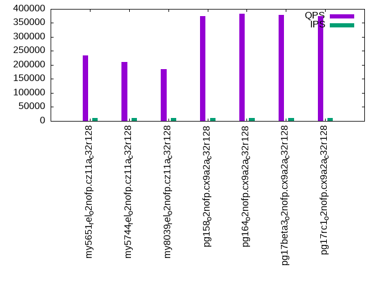
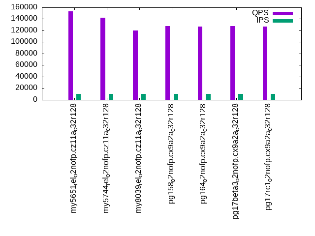
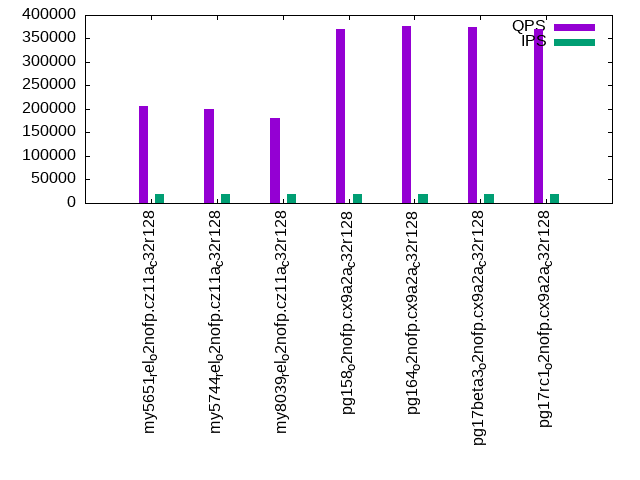

Introduction
This is a report for the insert benchmark with 200M docs and 20 client(s). It is generated by scripts (bash, awk, sed) and Tufte might not be impressed. An overview of the insert benchmark is here and a short update is here. Below, by DBMS, I mean DBMS+version.config. An example is my8020.c10b40 where my means MySQL, 8020 is version 8.0.20 and c10b40 is the name for the configuration file.
The test server is an ax162-s from Hetzner (see here) with 48 cores, AMD SMT disabled, 128G RAM and ext4 using 2 NVMe devices with SW RAID 1. The benchmark was run with 20 clients and there were 1 or 3 connections per client (1 for queries or inserts without rate limits, 1+1 for rate limited inserts+deletes). It uses 8 tables with a table per client. It loads 10M rows per table without secondary indexes, creates 3 secondary indexes per table, then inserts 16m+4m rows per table with a delete per insert to avoid growing the table. It then does 6 read+write tests for 1800s each that do queries as fast as possible with 100,100,500,500,1000,1000 inserts/s and the same for deletes/s per client concurrent with the queries. The database is cached in memory. Clients and the DBMS share one server.
The tested DBMS are:
- my5651_rel_o2nofp.cz11a_c32r128 - MySQL 5.6.51 compilred with CMAKE_BUILD_TYPE=Release, -O2 and frame pointers using the z11a_c32r128 config
- my5744_rel_o2nofp.cz11a_c32r128 - MySQL 5.7.44 compilred with CMAKE_BUILD_TYPE=Release, -O2 and frame pointers using the z11a_c32r128 config
- my8039_rel_o2nofp.cz11a_c32r128 - MySQL 8.0.39 compilred with CMAKE_BUILD_TYPE=Release, -O2 and frame pointers using the z11a_c32r128 config
- pg158_o2nofp.cx9a2a_c32r128 - Postgres 15.8 compiled with -O2 and frame pointers using the x9a2a_c32r128 config
- pg164_o2nofp.cx9a2a_c32r128 - Postgres 16.4 compiled with -O2 and frame pointers using the x9a2a_c32r128 config
- pg17beta3_o2nofp.cx9a2a_c32r128 - Postgres 17 beta3 compiled with -O2 and frame pointers using the x9a2a_c32r128 config
- pg17rc1_o2nofp.cx9a2a_c32r128 - Postgres 17 rc1 compiled with -O2 and frame pointers using the x9a2a_c32r128 config
Contents
- Summary
- l.i0: load without secondary indexes
- l.x: create secondary indexes
- l.i1: continue load after secondary indexes created with 50 inserts per transaction
- l.i2: continue load after secondary indexes created with 5 inserts per transaction
- qr100.L1: range queries with 100 insert/s per client
- qp100.L2: point queries with 100 insert/s per client
- qr500.L3: range queries with 500 insert/s per client
- qp500.L4: point queries with 500 insert/s per client
- qr1000.L5: range queries with 1000 insert/s per client
- qp1000.L6: point queries with 1000 insert/s per client
Summary
The numbers are inserts/s for l.i0, l.i1 and l.i2, indexed docs (or rows) /s for l.x and queries/s for qr100, qp100 thru qr1000, qp1000" The values are the average rate over the entire test for inserts (IPS) and queries (QPS). The range of values for IPS and QPS is split into 3 parts: bottom 25%, middle 50%, top 25%. Values in the bottom 25% have a red background, values in the top 25% have a green background and values in the middle have no color. A gray background is used for values that can be ignored because the DBMS did not sustain the target insert rate. Red backgrounds are not used when the minimum value is within 80% of the max value.
| dbms | l.i0 | l.x | l.i1 | l.i2 | qr100 | qp100 | qr500 | qp500 | qr1000 | qp1000 |
|---|---|---|---|---|---|---|---|---|---|---|
| my5651_rel_o2nofp.cz11a_c32r128 | 473934 | 386847 | 49836 | 33030 | 257731 | 166449 | 233378 | 153295 | 205653 | 145602 |
| my5744_rel_o2nofp.cz11a_c32r128 | 657895 | 2173914 | 80020 | 62745 | 216775 | 145365 | 210753 | 142159 | 200906 | 137255 |
| my8039_rel_o2nofp.cz11a_c32r128 | 1234568 | 2040817 | 199253 | 102564 | 186950 | 121020 | 184358 | 119707 | 180044 | 115866 |
| pg158_o2nofp.cx9a2a_c32r128 | 1666667 | 2597404 | 383234 | 94007 | 390692 | 128510 | 375186 | 127739 | 370418 | 126017 |
| pg164_o2nofp.cx9a2a_c32r128 | 1652892 | 2597404 | 384615 | 98280 | 392699 | 128251 | 383376 | 127213 | 377223 | 125792 |
| pg17beta3_o2nofp.cx9a2a_c32r128 | 1694915 | 2739727 | 397022 | 101652 | 392546 | 128510 | 378062 | 127254 | 375401 | 125869 |
| pg17rc1_o2nofp.cx9a2a_c32r128 | 1709402 | 2816903 | 393120 | 104167 | 387796 | 127752 | 374957 | 126889 | 370957 | 125252 |
This table has relative throughput, throughput for the DBMS relative to the DBMS in the first line, using the absolute throughput from the previous table. Values less than 0.95 have a yellow background. Values greater than 1.05 have a blue background.
| dbms | l.i0 | l.x | l.i1 | l.i2 | qr100 | qp100 | qr500 | qp500 | qr1000 | qp1000 |
|---|---|---|---|---|---|---|---|---|---|---|
| my5651_rel_o2nofp.cz11a_c32r128 | 1.00 | 1.00 | 1.00 | 1.00 | 1.00 | 1.00 | 1.00 | 1.00 | 1.00 | 1.00 |
| my5744_rel_o2nofp.cz11a_c32r128 | 1.39 | 5.62 | 1.61 | 1.90 | 0.84 | 0.87 | 0.90 | 0.93 | 0.98 | 0.94 |
| my8039_rel_o2nofp.cz11a_c32r128 | 2.60 | 5.28 | 4.00 | 3.11 | 0.73 | 0.73 | 0.79 | 0.78 | 0.88 | 0.80 |
| pg158_o2nofp.cx9a2a_c32r128 | 3.52 | 6.71 | 7.69 | 2.85 | 1.52 | 0.77 | 1.61 | 0.83 | 1.80 | 0.87 |
| pg164_o2nofp.cx9a2a_c32r128 | 3.49 | 6.71 | 7.72 | 2.98 | 1.52 | 0.77 | 1.64 | 0.83 | 1.83 | 0.86 |
| pg17beta3_o2nofp.cx9a2a_c32r128 | 3.58 | 7.08 | 7.97 | 3.08 | 1.52 | 0.77 | 1.62 | 0.83 | 1.83 | 0.86 |
| pg17rc1_o2nofp.cx9a2a_c32r128 | 3.61 | 7.28 | 7.89 | 3.15 | 1.50 | 0.77 | 1.61 | 0.83 | 1.80 | 0.86 |
This lists the average rate of inserts/s for the tests that do inserts concurrent with queries. For such tests the query rate is listed in the table above. The read+write tests are setup so that the insert rate should match the target rate every second. Cells that are not at least 95% of the target have a red background to indicate a failure to satisfy the target.
| dbms | qr100.L1 | qp100.L2 | qr500.L3 | qp500.L4 | qr1000.L5 | qp1000.L6 |
|---|---|---|---|---|---|---|
| my5651_rel_o2nofp.cz11a_c32r128 | 1977 | 1977 | 9885 | 9879 | 19780 | 19769 |
| my5744_rel_o2nofp.cz11a_c32r128 | 1977 | 1977 | 9879 | 9885 | 19769 | 19769 |
| my8039_rel_o2nofp.cz11a_c32r128 | 1977 | 1978 | 9885 | 9879 | 19769 | 19769 |
| pg158_o2nofp.cx9a2a_c32r128 | 1977 | 1977 | 9885 | 9885 | 19758 | 19769 |
| pg164_o2nofp.cx9a2a_c32r128 | 1977 | 1977 | 9885 | 9885 | 19758 | 19769 |
| pg17beta3_o2nofp.cx9a2a_c32r128 | 1978 | 1977 | 9885 | 9885 | 19758 | 19769 |
| pg17rc1_o2nofp.cx9a2a_c32r128 | 1977 | 1977 | 9885 | 9885 | 19758 | 19769 |
| target | 2000 | 2000 | 10000 | 10000 | 20000 | 20000 |
l.i0
l.i0: load without secondary indexes. Graphs for performance per 1-second interval are here.
Average throughput:
Insert response time histogram: each cell has the percentage of responses that take <= the time in the header and max is the max response time in seconds. For the max column values in the top 25% of the range have a red background and in the bottom 25% of the range have a green background. The red background is not used when the min value is within 80% of the max value.
| dbms | 256us | 1ms | 4ms | 16ms | 64ms | 256ms | 1s | 4s | 16s | gt | max |
|---|---|---|---|---|---|---|---|---|---|---|---|
| my5651_rel_o2nofp.cz11a_c32r128 | 2.824 | 56.656 | 40.134 | 0.352 | 0.034 | 0.174 | |||||
| my5744_rel_o2nofp.cz11a_c32r128 | 2.431 | 97.366 | 0.160 | 0.009 | 0.034 | 0.170 | |||||
| my8039_rel_o2nofp.cz11a_c32r128 | 1.706 | 98.226 | 0.021 | 0.012 | 0.035 | 0.203 | |||||
| pg158_o2nofp.cx9a2a_c32r128 | 92.282 | 7.675 | 0.021 | 0.004 | 0.010 | 0.007 | 0.648 | ||||
| pg164_o2nofp.cx9a2a_c32r128 | 92.427 | 7.527 | 0.027 | 0.004 | 0.007 | 0.008 | 0.741 | ||||
| pg17beta3_o2nofp.cx9a2a_c32r128 | 92.966 | 6.986 | 0.025 | 0.006 | 0.008 | 0.009 | 0.489 | ||||
| pg17rc1_o2nofp.cx9a2a_c32r128 | 93.049 | 6.901 | 0.030 | 0.007 | 0.010 | 0.004 | 0.539 |
Performance metrics for the DBMS listed above. Some are normalized by throughput, others are not. Legend for results is here.
ips qps rps rmbps wps wmbps rpq rkbpq wpi wkbpi csps cpups cspq cpupq dbgb1 dbgb2 rss maxop p50 p99 tag 473934 0 0 0.0 1721.8 130.8 0.000 0.000 0.004 0.283 72579 40.8 0.153 41 13.3 113.8 20.0 0.174 23774 20078 my5651_rel_o2nofp.cz11a_c32r128 657895 0 0 0.0 2742.7 188.4 0.000 0.000 0.004 0.293 74331 42.3 0.113 31 13.3 113.8 21.2 0.170 34563 28869 my5744_rel_o2nofp.cz11a_c32r128 1234568 0 0 0.0 4726.6 360.8 0.000 0.000 0.004 0.299 244411 47.1 0.198 18 13.3 113.9 20.8 0.203 75619 62932 my8039_rel_o2nofp.cz11a_c32r128 1666667 0 1 0.0 6631.3 698.9 0.000 0.000 0.004 0.429 254940 46.0 0.153 13 19.1 51.7 1.9 0.648 110482 30967 pg158_o2nofp.cx9a2a_c32r128 1652892 0 2 0.0 6655.7 704.0 0.000 0.000 0.004 0.436 260915 45.6 0.158 13 19.1 51.7 1.9 0.741 111712 44751 pg164_o2nofp.cx9a2a_c32r128 1694915 0 3 0.0 6699.9 706.9 0.000 0.000 0.004 0.427 265066 45.3 0.156 13 19.1 51.7 1.4 0.489 112778 47449 pg17beta3_o2nofp.cx9a2a_c32r128 1709402 0 0 0.0 6770.0 718.3 0.000 0.000 0.004 0.430 274194 46.8 0.160 13 19.1 51.7 12.2 0.539 112979 49047 pg17rc1_o2nofp.cx9a2a_c32r128
l.x
l.x: create secondary indexes.
Average throughput:
Performance metrics for the DBMS listed above. Some are normalized by throughput, others are not. Legend for results is here.
ips qps rps rmbps wps wmbps rpq rkbpq wpi wkbpi csps cpups cspq cpupq dbgb1 dbgb2 rss maxop p50 p99 tag 386847 0 0 0.0 19971.2 671.7 0.000 0.000 0.052 1.778 85204 39.8 0.220 49 27.9 128.4 34.7 0.001 NA NA my5651_rel_o2nofp.cz11a_c32r128 2173914 0 1 0.0 35495.5 1830.2 0.000 0.000 0.016 0.862 194707 35.7 0.090 8 30.4 130.9 36.6 0.002 NA NA my5744_rel_o2nofp.cz11a_c32r128 2040817 0 14851 639.1 55978.1 2116.4 0.007 0.321 0.027 1.062 177713 70.0 0.087 16 30.3 130.9 29.2 0.010 NA NA my8039_rel_o2nofp.cz11a_c32r128 2597404 0 0 0.0 6280.5 724.0 0.000 0.000 0.002 0.285 105828 17.8 0.041 3 38.4 88.6 6.9 0.045 NA NA pg158_o2nofp.cx9a2a_c32r128 2597404 0 0 0.0 6171.7 713.0 0.000 0.000 0.002 0.281 105324 17.9 0.041 3 38.4 88.6 6.3 0.044 NA NA pg164_o2nofp.cx9a2a_c32r128 2739727 0 1 0.0 6884.0 797.9 0.000 0.000 0.003 0.298 40487 17.1 0.015 3 38.4 88.5 6.4 0.044 NA NA pg17beta3_o2nofp.cx9a2a_c32r128 2816903 0 0 0.0 7336.8 855.7 0.000 0.000 0.003 0.311 42161 17.9 0.015 3 38.4 88.5 6.4 0.036 NA NA pg17rc1_o2nofp.cx9a2a_c32r128
l.i1
l.i1: continue load after secondary indexes created with 50 inserts per transaction. Graphs for performance per 1-second interval are here.
Average throughput:
Insert response time histogram: each cell has the percentage of responses that take <= the time in the header and max is the max response time in seconds. For the max column values in the top 25% of the range have a red background and in the bottom 25% of the range have a green background. The red background is not used when the min value is within 80% of the max value.
| dbms | 256us | 1ms | 4ms | 16ms | 64ms | 256ms | 1s | 4s | 16s | gt | max |
|---|---|---|---|---|---|---|---|---|---|---|---|
| my5651_rel_o2nofp.cz11a_c32r128 | 0.002 | 0.318 | 24.045 | 74.833 | 0.118 | 0.684 | 0.485 | ||||
| my5744_rel_o2nofp.cz11a_c32r128 | 0.151 | 98.134 | 0.718 | 0.308 | 0.688 | 0.309 | |||||
| my8039_rel_o2nofp.cz11a_c32r128 | 65.028 | 34.609 | 0.305 | 0.057 | nonzero | 0.321 | |||||
| pg158_o2nofp.cx9a2a_c32r128 | 1.481 | 91.183 | 6.776 | 0.554 | 0.006 | nonzero | 0.457 | ||||
| pg164_o2nofp.cx9a2a_c32r128 | 1.463 | 90.793 | 7.211 | 0.526 | 0.007 | 0.144 | |||||
| pg17beta3_o2nofp.cx9a2a_c32r128 | 1.512 | 90.550 | 7.418 | 0.516 | 0.004 | 0.001 | 0.435 | ||||
| pg17rc1_o2nofp.cx9a2a_c32r128 | 1.711 | 90.375 | 7.379 | 0.530 | 0.005 | 0.001 | 0.696 |
Delete response time histogram: each cell has the percentage of responses that take <= the time in the header and max is the max response time in seconds. For the max column values in the top 25% of the range have a red background and in the bottom 25% of the range have a green background. The red background is not used when the min value is within 80% of the max value.
| dbms | 256us | 1ms | 4ms | 16ms | 64ms | 256ms | 1s | 4s | 16s | gt | max |
|---|---|---|---|---|---|---|---|---|---|---|---|
| my5651_rel_o2nofp.cz11a_c32r128 | 0.005 | 0.552 | 35.507 | 63.141 | 0.112 | 0.683 | 0.461 | ||||
| my5744_rel_o2nofp.cz11a_c32r128 | 0.001 | 0.350 | 97.725 | 0.931 | 0.395 | 0.598 | 0.309 | ||||
| my8039_rel_o2nofp.cz11a_c32r128 | nonzero | 67.917 | 31.686 | 0.317 | 0.080 | nonzero | 0.311 | ||||
| pg158_o2nofp.cx9a2a_c32r128 | 17.343 | 79.280 | 3.103 | 0.270 | 0.004 | 0.236 | |||||
| pg164_o2nofp.cx9a2a_c32r128 | 17.560 | 79.204 | 3.000 | 0.233 | 0.003 | 0.145 | |||||
| pg17beta3_o2nofp.cx9a2a_c32r128 | 22.012 | 74.851 | 2.899 | 0.235 | 0.003 | nonzero | 0.432 | ||||
| pg17rc1_o2nofp.cx9a2a_c32r128 | 21.586 | 75.302 | 2.879 | 0.229 | 0.003 | nonzero | 0.692 |
Performance metrics for the DBMS listed above. Some are normalized by throughput, others are not. Legend for results is here.
ips qps rps rmbps wps wmbps rpq rkbpq wpi wkbpi csps cpups cspq cpupq dbgb1 dbgb2 rss maxop p50 p99 tag 49836 0 1046 4.1 3490.5 127.1 0.021 0.084 0.070 2.611 261389 65.8 5.245 634 46.4 148.4 52.8 0.485 2598 150 my5651_rel_o2nofp.cz11a_c32r128 80020 0 0 0.0 5275.3 195.3 0.000 0.000 0.066 2.499 86600 73.4 1.082 440 47.6 149.6 55.3 0.309 4895 150 my5744_rel_o2nofp.cz11a_c32r128 199253 0 601 9.4 11848.3 498.3 0.003 0.048 0.059 2.561 370334 49.2 1.859 119 48.9 151.4 65.3 0.321 11587 3296 my8039_rel_o2nofp.cz11a_c32r128 383234 0 932 5.5 6402.0 594.5 0.002 0.015 0.017 1.588 263431 54.8 0.687 69 56.4 152.4 42.5 0.457 22109 3946 pg158_o2nofp.cx9a2a_c32r128 384615 0 704 3.2 6213.6 589.1 0.002 0.009 0.016 1.568 270915 54.9 0.704 69 56.0 152.0 49.8 0.144 22076 3796 pg164_o2nofp.cx9a2a_c32r128 397022 0 644 2.9 6517.7 622.2 0.002 0.008 0.016 1.605 255362 53.6 0.643 65 56.0 152.0 38.7 0.435 22925 3246 pg17beta3_o2nofp.cx9a2a_c32r128 393120 0 631 2.9 6440.2 612.9 0.002 0.008 0.016 1.597 259091 53.0 0.659 65 56.1 152.1 8.7 0.696 22833 3346 pg17rc1_o2nofp.cx9a2a_c32r128
l.i2
l.i2: continue load after secondary indexes created with 5 inserts per transaction. Graphs for performance per 1-second interval are here.
Average throughput:
Insert response time histogram: each cell has the percentage of responses that take <= the time in the header and max is the max response time in seconds. For the max column values in the top 25% of the range have a red background and in the bottom 25% of the range have a green background. The red background is not used when the min value is within 80% of the max value.
| dbms | 256us | 1ms | 4ms | 16ms | 64ms | 256ms | 1s | 4s | 16s | gt | max |
|---|---|---|---|---|---|---|---|---|---|---|---|
| my5651_rel_o2nofp.cz11a_c32r128 | 0.014 | 2.069 | 86.750 | 10.239 | 0.927 | 0.001 | 0.092 | ||||
| my5744_rel_o2nofp.cz11a_c32r128 | 0.049 | 42.110 | 55.760 | 1.629 | 0.446 | 0.007 | 0.163 | ||||
| my8039_rel_o2nofp.cz11a_c32r128 | 0.064 | 78.666 | 19.292 | 1.966 | 0.003 | 0.008 | 0.194 | ||||
| pg158_o2nofp.cx9a2a_c32r128 | 86.515 | 12.707 | 0.759 | 0.018 | nonzero | 0.032 | |||||
| pg164_o2nofp.cx9a2a_c32r128 | 86.882 | 12.298 | 0.800 | 0.019 | nonzero | nonzero | 0.072 | ||||
| pg17beta3_o2nofp.cx9a2a_c32r128 | 89.994 | 9.644 | 0.345 | 0.017 | nonzero | 0.060 | |||||
| pg17rc1_o2nofp.cx9a2a_c32r128 | 90.301 | 9.346 | 0.340 | 0.013 | nonzero | nonzero | 0.064 |
Delete response time histogram: each cell has the percentage of responses that take <= the time in the header and max is the max response time in seconds. For the max column values in the top 25% of the range have a red background and in the bottom 25% of the range have a green background. The red background is not used when the min value is within 80% of the max value.
| dbms | 256us | 1ms | 4ms | 16ms | 64ms | 256ms | 1s | 4s | 16s | gt | max |
|---|---|---|---|---|---|---|---|---|---|---|---|
| my5651_rel_o2nofp.cz11a_c32r128 | 0.016 | 2.462 | 86.728 | 9.868 | 0.925 | 0.001 | 0.093 | ||||
| my5744_rel_o2nofp.cz11a_c32r128 | 0.044 | 25.552 | 71.722 | 2.229 | 0.446 | 0.007 | 0.162 | ||||
| my8039_rel_o2nofp.cz11a_c32r128 | 0.057 | 78.865 | 19.118 | 1.948 | 0.003 | 0.008 | 0.185 | ||||
| pg158_o2nofp.cx9a2a_c32r128 | 2.689 | 47.820 | 49.470 | 0.021 | nonzero | 0.026 | |||||
| pg164_o2nofp.cx9a2a_c32r128 | 2.912 | 47.843 | 49.218 | 0.026 | 0.001 | nonzero | 0.073 | ||||
| pg17beta3_o2nofp.cx9a2a_c32r128 | 3.694 | 58.911 | 37.332 | 0.063 | 0.001 | 0.061 | |||||
| pg17rc1_o2nofp.cx9a2a_c32r128 | 3.545 | 57.307 | 39.092 | 0.055 | 0.001 | nonzero | 0.064 |
Performance metrics for the DBMS listed above. Some are normalized by throughput, others are not. Legend for results is here.
ips qps rps rmbps wps wmbps rpq rkbpq wpi wkbpi csps cpups cspq cpupq dbgb1 dbgb2 rss maxop p50 p99 tag 33030 0 4148 16.2 3556.7 130.4 0.126 0.502 0.108 4.043 424241 52.8 12.844 767 46.4 148.4 53.3 0.092 1763 165 my5651_rel_o2nofp.cz11a_c32r128 62745 0 0 0.0 5998.2 229.3 0.000 0.000 0.096 3.742 305780 54.9 4.873 420 47.6 149.6 55.8 0.163 3401 180 my5744_rel_o2nofp.cz11a_c32r128 102564 0 0 0.0 9836.8 407.7 0.000 0.000 0.096 4.071 627582 52.1 6.119 244 48.9 150.1 65.4 0.194 5749 830 my8039_rel_o2nofp.cz11a_c32r128 94007 0 0 0.0 1418.9 135.4 0.000 0.000 0.015 1.475 383097 52.7 4.075 269 56.6 152.7 8.9 0.032 4001 3018 pg158_o2nofp.cx9a2a_c32r128 98280 0 0 0.0 1482.5 142.0 0.000 0.000 0.015 1.480 400824 54.4 4.078 266 56.2 152.3 6.3 0.072 4466 3311 pg164_o2nofp.cx9a2a_c32r128 101652 0 1 0.0 1496.9 143.1 0.000 0.000 0.015 1.442 385029 52.4 3.788 247 56.2 152.3 17.1 0.060 4800 3256 pg17beta3_o2nofp.cx9a2a_c32r128 104167 0 1 0.0 1559.2 147.9 0.000 0.000 0.015 1.454 392508 54.1 3.768 249 56.3 152.4 16.3 0.064 4483 3323 pg17rc1_o2nofp.cx9a2a_c32r128
qr100.L1
qr100.L1: range queries with 100 insert/s per client. Graphs for performance per 1-second interval are here.
Average throughput:
Query response time histogram: each cell has the percentage of responses that take <= the time in the header and max is the max response time in seconds. For max values in the top 25% of the range have a red background and in the bottom 25% of the range have a green background. The red background is not used when the min value is within 80% of the max value.
| dbms | 256us | 1ms | 4ms | 16ms | 64ms | 256ms | 1s | 4s | 16s | gt | max |
|---|---|---|---|---|---|---|---|---|---|---|---|
| my5651_rel_o2nofp.cz11a_c32r128 | 99.957 | 0.037 | 0.005 | nonzero | nonzero | 0.021 | |||||
| my5744_rel_o2nofp.cz11a_c32r128 | 99.991 | 0.007 | 0.002 | nonzero | nonzero | 0.019 | |||||
| my8039_rel_o2nofp.cz11a_c32r128 | 99.983 | 0.015 | 0.002 | nonzero | 0.016 | ||||||
| pg158_o2nofp.cx9a2a_c32r128 | 99.997 | 0.002 | 0.001 | nonzero | nonzero | 0.017 | |||||
| pg164_o2nofp.cx9a2a_c32r128 | 99.997 | 0.002 | 0.001 | nonzero | 0.010 | ||||||
| pg17beta3_o2nofp.cx9a2a_c32r128 | 99.997 | 0.002 | 0.001 | nonzero | nonzero | 0.028 | |||||
| pg17rc1_o2nofp.cx9a2a_c32r128 | 99.996 | 0.002 | 0.001 | nonzero | 0.012 |
Insert response time histogram: each cell has the percentage of responses that take <= the time in the header and max is the max response time in seconds. For max values in the top 25% of the range have a red background and in the bottom 25% of the range have a green background. The red background is not used when the min value is within 80% of the max value.
| dbms | 256us | 1ms | 4ms | 16ms | 64ms | 256ms | 1s | 4s | 16s | gt | max |
|---|---|---|---|---|---|---|---|---|---|---|---|
| my5651_rel_o2nofp.cz11a_c32r128 | 42.160 | 56.356 | 1.485 | 0.032 | |||||||
| my5744_rel_o2nofp.cz11a_c32r128 | 98.861 | 1.139 | 0.012 | ||||||||
| my8039_rel_o2nofp.cz11a_c32r128 | 96.807 | 3.181 | 0.013 | 0.017 | |||||||
| pg158_o2nofp.cx9a2a_c32r128 | 99.612 | 0.383 | 0.004 | 0.023 | |||||||
| pg164_o2nofp.cx9a2a_c32r128 | 0.001 | 99.672 | 0.326 | 0.011 | |||||||
| pg17beta3_o2nofp.cx9a2a_c32r128 | 0.001 | 99.688 | 0.307 | 0.004 | 0.029 | ||||||
| pg17rc1_o2nofp.cx9a2a_c32r128 | 0.004 | 99.722 | 0.268 | 0.006 | 0.023 |
Delete response time histogram: each cell has the percentage of responses that take <= the time in the header and max is the max response time in seconds. For max values in the top 25% of the range have a red background and in the bottom 25% of the range have a green background. The red background is not used when the min value is within 80% of the max value.
| dbms | 256us | 1ms | 4ms | 16ms | 64ms | 256ms | 1s | 4s | 16s | gt | max |
|---|---|---|---|---|---|---|---|---|---|---|---|
| my5651_rel_o2nofp.cz11a_c32r128 | 0.019 | 54.632 | 44.474 | 0.875 | 0.036 | ||||||
| my5744_rel_o2nofp.cz11a_c32r128 | 0.082 | 99.336 | 0.582 | 0.012 | |||||||
| my8039_rel_o2nofp.cz11a_c32r128 | 0.013 | 97.826 | 2.150 | 0.011 | 0.019 | ||||||
| pg158_o2nofp.cx9a2a_c32r128 | 66.736 | 33.233 | 0.029 | 0.001 | 0.023 | ||||||
| pg164_o2nofp.cx9a2a_c32r128 | 69.793 | 30.185 | 0.022 | 0.006 | |||||||
| pg17beta3_o2nofp.cx9a2a_c32r128 | 68.083 | 31.897 | 0.017 | 0.003 | 0.029 | ||||||
| pg17rc1_o2nofp.cx9a2a_c32r128 | 67.436 | 32.539 | 0.021 | 0.004 | 0.025 |
Performance metrics for the DBMS listed above. Some are normalized by throughput, others are not. Legend for results is here.
ips qps rps rmbps wps wmbps rpq rkbpq wpi wkbpi csps cpups cspq cpupq dbgb1 dbgb2 rss maxop p50 p99 tag 1977 257731 56 0.2 1430.5 41.1 0.000 0.001 0.724 21.295 990903 42.6 3.845 79 46.4 148.4 53.3 0.021 13090 11827 my5651_rel_o2nofp.cz11a_c32r128 1977 216775 0 0.0 2689.8 75.7 0.000 0.000 1.361 39.213 835987 43.6 3.856 97 47.6 149.6 55.9 0.019 10932 10261 my5744_rel_o2nofp.cz11a_c32r128 1977 186950 0 0.0 2447.0 69.4 0.000 0.000 1.238 35.968 721662 43.1 3.860 111 48.9 150.1 65.4 0.016 9413 9017 my8039_rel_o2nofp.cz11a_c32r128 1977 390692 0 0.0 122.2 10.4 0.000 0.000 0.062 5.388 1484857 42.6 3.801 52 56.6 152.7 0.5 0.017 20065 18412 pg158_o2nofp.cx9a2a_c32r128 1977 392699 0 0.0 120.9 10.4 0.000 0.000 0.061 5.401 1492924 42.5 3.802 52 56.2 152.2 2.0 0.010 19659 18043 pg164_o2nofp.cx9a2a_c32r128 1978 392546 1 0.0 121.6 10.4 0.000 0.000 0.061 5.409 1490918 42.5 3.798 52 56.2 152.3 0.5 0.028 19818 18108 pg17beta3_o2nofp.cx9a2a_c32r128 1977 387796 0 0.0 129.2 10.5 0.000 0.000 0.065 5.421 1474076 42.6 3.801 53 56.3 152.4 0.5 0.012 19691 18147 pg17rc1_o2nofp.cx9a2a_c32r128
qp100.L2
qp100.L2: point queries with 100 insert/s per client. Graphs for performance per 1-second interval are here.
Average throughput:
Query response time histogram: each cell has the percentage of responses that take <= the time in the header and max is the max response time in seconds. For max values in the top 25% of the range have a red background and in the bottom 25% of the range have a green background. The red background is not used when the min value is within 80% of the max value.
| dbms | 256us | 1ms | 4ms | 16ms | 64ms | 256ms | 1s | 4s | 16s | gt | max |
|---|---|---|---|---|---|---|---|---|---|---|---|
| my5651_rel_o2nofp.cz11a_c32r128 | 99.805 | 0.184 | 0.010 | nonzero | 0.010 | ||||||
| my5744_rel_o2nofp.cz11a_c32r128 | 99.435 | 0.560 | 0.005 | nonzero | 0.015 | ||||||
| my8039_rel_o2nofp.cz11a_c32r128 | 99.183 | 0.807 | 0.009 | nonzero | 0.012 | ||||||
| pg158_o2nofp.cx9a2a_c32r128 | 99.702 | 0.237 | 0.062 | nonzero | 0.012 | ||||||
| pg164_o2nofp.cx9a2a_c32r128 | 99.706 | 0.228 | 0.066 | nonzero | 0.007 | ||||||
| pg17beta3_o2nofp.cx9a2a_c32r128 | 99.717 | 0.220 | 0.062 | nonzero | 0.009 | ||||||
| pg17rc1_o2nofp.cx9a2a_c32r128 | 99.711 | 0.225 | 0.064 | nonzero | 0.008 |
Insert response time histogram: each cell has the percentage of responses that take <= the time in the header and max is the max response time in seconds. For max values in the top 25% of the range have a red background and in the bottom 25% of the range have a green background. The red background is not used when the min value is within 80% of the max value.
| dbms | 256us | 1ms | 4ms | 16ms | 64ms | 256ms | 1s | 4s | 16s | gt | max |
|---|---|---|---|---|---|---|---|---|---|---|---|
| my5651_rel_o2nofp.cz11a_c32r128 | 29.361 | 70.160 | 0.479 | 0.047 | |||||||
| my5744_rel_o2nofp.cz11a_c32r128 | 99.731 | 0.269 | 0.011 | ||||||||
| my8039_rel_o2nofp.cz11a_c32r128 | 99.008 | 0.992 | 0.012 | ||||||||
| pg158_o2nofp.cx9a2a_c32r128 | 99.492 | 0.508 | 0.013 | ||||||||
| pg164_o2nofp.cx9a2a_c32r128 | 99.656 | 0.344 | 0.009 | ||||||||
| pg17beta3_o2nofp.cx9a2a_c32r128 | 99.656 | 0.344 | 0.011 | ||||||||
| pg17rc1_o2nofp.cx9a2a_c32r128 | 99.643 | 0.357 | 0.009 |
Delete response time histogram: each cell has the percentage of responses that take <= the time in the header and max is the max response time in seconds. For max values in the top 25% of the range have a red background and in the bottom 25% of the range have a green background. The red background is not used when the min value is within 80% of the max value.
| dbms | 256us | 1ms | 4ms | 16ms | 64ms | 256ms | 1s | 4s | 16s | gt | max |
|---|---|---|---|---|---|---|---|---|---|---|---|
| my5651_rel_o2nofp.cz11a_c32r128 | 0.014 | 39.149 | 60.550 | 0.287 | 0.046 | ||||||
| my5744_rel_o2nofp.cz11a_c32r128 | 0.707 | 99.158 | 0.135 | 0.009 | |||||||
| my8039_rel_o2nofp.cz11a_c32r128 | 99.476 | 0.524 | 0.011 | ||||||||
| pg158_o2nofp.cx9a2a_c32r128 | 7.032 | 92.865 | 0.103 | 0.011 | |||||||
| pg164_o2nofp.cx9a2a_c32r128 | 1.781 | 98.133 | 0.086 | 0.009 | |||||||
| pg17beta3_o2nofp.cx9a2a_c32r128 | 21.272 | 78.643 | 0.085 | 0.010 | |||||||
| pg17rc1_o2nofp.cx9a2a_c32r128 | 1.146 | 98.768 | 0.086 | 0.009 |
Performance metrics for the DBMS listed above. Some are normalized by throughput, others are not. Legend for results is here.
ips qps rps rmbps wps wmbps rpq rkbpq wpi wkbpi csps cpups cspq cpupq dbgb1 dbgb2 rss maxop p50 p99 tag 1977 166449 52 0.2 30.6 2.2 0.000 0.001 0.015 1.144 650343 40.7 3.907 117 46.4 148.4 53.4 0.010 8423 7624 my5651_rel_o2nofp.cz11a_c32r128 1977 145365 0 0.0 237.9 7.7 0.000 0.000 0.120 4.007 555391 41.0 3.821 135 47.6 149.6 55.9 0.015 7336 6809 my5744_rel_o2nofp.cz11a_c32r128 1978 121020 3 0.3 299.9 9.9 0.000 0.002 0.152 5.140 477959 41.6 3.949 165 48.9 150.1 65.4 0.012 6139 5756 my8039_rel_o2nofp.cz11a_c32r128 1977 128510 0 0.0 358.0 18.0 0.000 0.000 0.181 9.324 515516 44.4 4.012 166 56.6 149.5 0.5 0.012 6521 6393 pg158_o2nofp.cx9a2a_c32r128 1977 128251 0 0.0 343.8 17.9 0.000 0.000 0.174 9.247 513863 44.6 4.007 167 56.2 149.1 2.4 0.007 6521 6378 pg164_o2nofp.cx9a2a_c32r128 1977 128510 1 0.0 343.4 17.9 0.000 0.000 0.174 9.250 515352 44.5 4.010 166 56.2 149.2 0.5 0.009 6548 6407 pg17beta3_o2nofp.cx9a2a_c32r128 1977 127752 0 0.0 342.1 17.8 0.000 0.000 0.173 9.243 511978 44.7 4.008 168 56.3 149.2 0.5 0.008 6475 6345 pg17rc1_o2nofp.cx9a2a_c32r128
qr500.L3
qr500.L3: range queries with 500 insert/s per client. Graphs for performance per 1-second interval are here.
Average throughput:
Query response time histogram: each cell has the percentage of responses that take <= the time in the header and max is the max response time in seconds. For max values in the top 25% of the range have a red background and in the bottom 25% of the range have a green background. The red background is not used when the min value is within 80% of the max value.
| dbms | 256us | 1ms | 4ms | 16ms | 64ms | 256ms | 1s | 4s | 16s | gt | max |
|---|---|---|---|---|---|---|---|---|---|---|---|
| my5651_rel_o2nofp.cz11a_c32r128 | 99.617 | 0.318 | 0.058 | 0.007 | nonzero | 0.017 | |||||
| my5744_rel_o2nofp.cz11a_c32r128 | 99.976 | 0.014 | 0.008 | 0.002 | nonzero | 0.026 | |||||
| my8039_rel_o2nofp.cz11a_c32r128 | 99.964 | 0.024 | 0.011 | 0.001 | nonzero | 0.032 | |||||
| pg158_o2nofp.cx9a2a_c32r128 | 99.987 | 0.006 | 0.007 | nonzero | nonzero | 0.060 | |||||
| pg164_o2nofp.cx9a2a_c32r128 | 99.987 | 0.006 | 0.007 | nonzero | nonzero | nonzero | 0.077 | ||||
| pg17beta3_o2nofp.cx9a2a_c32r128 | 99.987 | 0.006 | 0.007 | nonzero | nonzero | 0.026 | |||||
| pg17rc1_o2nofp.cx9a2a_c32r128 | 99.987 | 0.006 | 0.007 | nonzero | nonzero | nonzero | 0.084 |
Insert response time histogram: each cell has the percentage of responses that take <= the time in the header and max is the max response time in seconds. For max values in the top 25% of the range have a red background and in the bottom 25% of the range have a green background. The red background is not used when the min value is within 80% of the max value.
| dbms | 256us | 1ms | 4ms | 16ms | 64ms | 256ms | 1s | 4s | 16s | gt | max |
|---|---|---|---|---|---|---|---|---|---|---|---|
| my5651_rel_o2nofp.cz11a_c32r128 | 0.001 | 6.869 | 70.279 | 22.851 | 0.049 | ||||||
| my5744_rel_o2nofp.cz11a_c32r128 | nonzero | 74.985 | 24.509 | 0.505 | 0.040 | ||||||
| my8039_rel_o2nofp.cz11a_c32r128 | 75.498 | 24.081 | 0.420 | 0.035 | |||||||
| pg158_o2nofp.cx9a2a_c32r128 | 4.269 | 94.575 | 1.127 | 0.028 | 0.033 | ||||||
| pg164_o2nofp.cx9a2a_c32r128 | 4.631 | 94.353 | 0.975 | 0.041 | 0.038 | ||||||
| pg17beta3_o2nofp.cx9a2a_c32r128 | 10.606 | 88.368 | 0.985 | 0.041 | 0.036 | ||||||
| pg17rc1_o2nofp.cx9a2a_c32r128 | 8.110 | 90.932 | 0.930 | 0.028 | 0.037 |
Delete response time histogram: each cell has the percentage of responses that take <= the time in the header and max is the max response time in seconds. For max values in the top 25% of the range have a red background and in the bottom 25% of the range have a green background. The red background is not used when the min value is within 80% of the max value.
| dbms | 256us | 1ms | 4ms | 16ms | 64ms | 256ms | 1s | 4s | 16s | gt | max |
|---|---|---|---|---|---|---|---|---|---|---|---|
| my5651_rel_o2nofp.cz11a_c32r128 | 0.005 | 8.737 | 71.314 | 19.944 | 0.049 | ||||||
| my5744_rel_o2nofp.cz11a_c32r128 | 0.048 | 78.964 | 20.572 | 0.416 | 0.043 | ||||||
| my8039_rel_o2nofp.cz11a_c32r128 | 0.024 | 81.699 | 17.979 | 0.298 | 0.035 | ||||||
| pg158_o2nofp.cx9a2a_c32r128 | 49.923 | 49.333 | 0.736 | 0.009 | 0.032 | ||||||
| pg164_o2nofp.cx9a2a_c32r128 | 50.872 | 48.481 | 0.629 | 0.019 | 0.026 | ||||||
| pg17beta3_o2nofp.cx9a2a_c32r128 | 54.559 | 44.807 | 0.618 | 0.016 | 0.025 | ||||||
| pg17rc1_o2nofp.cx9a2a_c32r128 | 53.090 | 46.301 | 0.597 | 0.011 | 0.037 |
Performance metrics for the DBMS listed above. Some are normalized by throughput, others are not. Legend for results is here.
ips qps rps rmbps wps wmbps rpq rkbpq wpi wkbpi csps cpups cspq cpupq dbgb1 dbgb2 rss maxop p50 p99 tag 9885 233378 214 0.8 1171.1 40.1 0.001 0.004 0.118 4.153 901112 45.6 3.861 94 46.4 148.4 53.4 0.017 11747 9925 my5651_rel_o2nofp.cz11a_c32r128 9879 210753 0 0.0 1163.9 40.1 0.000 0.000 0.118 4.152 802403 46.2 3.807 105 47.6 149.6 55.9 0.026 10664 9973 my5744_rel_o2nofp.cz11a_c32r128 9885 184358 0 0.0 1325.4 46.7 0.000 0.000 0.134 4.840 710818 44.9 3.856 117 48.9 150.1 65.4 0.032 9337 9014 my8039_rel_o2nofp.cz11a_c32r128 9885 375186 0 0.0 518.7 27.5 0.000 0.000 0.052 2.852 1420911 43.4 3.787 56 56.7 142.9 40.2 0.060 19003 16430 pg158_o2nofp.cx9a2a_c32r128 9885 383376 0 0.0 511.6 27.4 0.000 0.000 0.052 2.842 1452434 43.3 3.789 54 56.3 142.4 33.7 0.077 19506 17309 pg164_o2nofp.cx9a2a_c32r128 9885 378062 0 0.0 509.8 27.4 0.000 0.000 0.052 2.836 1430822 43.2 3.785 55 56.3 142.6 39.0 0.026 19131 16878 pg17beta3_o2nofp.cx9a2a_c32r128 9885 374957 0 0.0 510.6 27.4 0.000 0.000 0.052 2.838 1419204 43.3 3.785 55 56.3 142.5 21.8 0.084 19035 16637 pg17rc1_o2nofp.cx9a2a_c32r128
qp500.L4
qp500.L4: point queries with 500 insert/s per client. Graphs for performance per 1-second interval are here.
Average throughput:
Query response time histogram: each cell has the percentage of responses that take <= the time in the header and max is the max response time in seconds. For max values in the top 25% of the range have a red background and in the bottom 25% of the range have a green background. The red background is not used when the min value is within 80% of the max value.
| dbms | 256us | 1ms | 4ms | 16ms | 64ms | 256ms | 1s | 4s | 16s | gt | max |
|---|---|---|---|---|---|---|---|---|---|---|---|
| my5651_rel_o2nofp.cz11a_c32r128 | 99.100 | 0.820 | 0.073 | 0.008 | nonzero | 0.020 | |||||
| my5744_rel_o2nofp.cz11a_c32r128 | 99.195 | 0.765 | 0.033 | 0.007 | nonzero | 0.025 | |||||
| my8039_rel_o2nofp.cz11a_c32r128 | 99.011 | 0.923 | 0.061 | 0.005 | nonzero | 0.034 | |||||
| pg158_o2nofp.cx9a2a_c32r128 | 99.631 | 0.282 | 0.086 | 0.001 | nonzero | nonzero | 0.067 | ||||
| pg164_o2nofp.cx9a2a_c32r128 | 99.628 | 0.279 | 0.092 | 0.001 | nonzero | nonzero | 0.067 | ||||
| pg17beta3_o2nofp.cx9a2a_c32r128 | 99.640 | 0.271 | 0.088 | 0.001 | nonzero | nonzero | 0.095 | ||||
| pg17rc1_o2nofp.cx9a2a_c32r128 | 99.639 | 0.273 | 0.088 | 0.001 | nonzero | nonzero | 0.070 |
Insert response time histogram: each cell has the percentage of responses that take <= the time in the header and max is the max response time in seconds. For max values in the top 25% of the range have a red background and in the bottom 25% of the range have a green background. The red background is not used when the min value is within 80% of the max value.
| dbms | 256us | 1ms | 4ms | 16ms | 64ms | 256ms | 1s | 4s | 16s | gt | max |
|---|---|---|---|---|---|---|---|---|---|---|---|
| my5651_rel_o2nofp.cz11a_c32r128 | 0.001 | 6.611 | 73.270 | 20.118 | 0.053 | ||||||
| my5744_rel_o2nofp.cz11a_c32r128 | 0.002 | 66.457 | 33.118 | 0.422 | 0.036 | ||||||
| my8039_rel_o2nofp.cz11a_c32r128 | 83.015 | 16.877 | 0.108 | 0.031 | |||||||
| pg158_o2nofp.cx9a2a_c32r128 | 0.987 | 98.097 | 0.893 | 0.024 | 0.038 | ||||||
| pg164_o2nofp.cx9a2a_c32r128 | 1.033 | 97.948 | 0.999 | 0.020 | 0.038 | ||||||
| pg17beta3_o2nofp.cx9a2a_c32r128 | 5.746 | 93.351 | 0.892 | 0.011 | 0.029 | ||||||
| pg17rc1_o2nofp.cx9a2a_c32r128 | 3.521 | 95.626 | 0.841 | 0.012 | 0.036 |
Delete response time histogram: each cell has the percentage of responses that take <= the time in the header and max is the max response time in seconds. For max values in the top 25% of the range have a red background and in the bottom 25% of the range have a green background. The red background is not used when the min value is within 80% of the max value.
| dbms | 256us | 1ms | 4ms | 16ms | 64ms | 256ms | 1s | 4s | 16s | gt | max |
|---|---|---|---|---|---|---|---|---|---|---|---|
| my5651_rel_o2nofp.cz11a_c32r128 | 0.010 | 8.719 | 74.267 | 17.004 | 0.053 | ||||||
| my5744_rel_o2nofp.cz11a_c32r128 | 0.079 | 71.949 | 27.621 | 0.352 | 0.038 | ||||||
| my8039_rel_o2nofp.cz11a_c32r128 | 0.006 | 87.864 | 12.053 | 0.077 | 0.023 | ||||||
| pg158_o2nofp.cx9a2a_c32r128 | 39.161 | 60.248 | 0.568 | 0.022 | 0.035 | ||||||
| pg164_o2nofp.cx9a2a_c32r128 | 39.716 | 59.617 | 0.649 | 0.017 | 0.038 | ||||||
| pg17beta3_o2nofp.cx9a2a_c32r128 | 45.576 | 53.773 | 0.642 | 0.009 | 0.025 | ||||||
| pg17rc1_o2nofp.cx9a2a_c32r128 | 43.856 | 55.607 | 0.526 | 0.012 | 0.034 |
Performance metrics for the DBMS listed above. Some are normalized by throughput, others are not. Legend for results is here.
ips qps rps rmbps wps wmbps rpq rkbpq wpi wkbpi csps cpups cspq cpupq dbgb1 dbgb2 rss maxop p50 p99 tag 9879 153295 216 0.8 1329.3 44.3 0.001 0.006 0.135 4.597 600337 44.0 3.916 138 46.4 148.4 53.5 0.020 7688 6959 my5651_rel_o2nofp.cz11a_c32r128 9885 142159 0 0.0 1187.4 40.8 0.000 0.000 0.120 4.227 543922 43.7 3.826 148 47.6 149.6 56.0 0.025 7192 6665 my5744_rel_o2nofp.cz11a_c32r128 9879 119707 0 0.0 1390.5 48.6 0.000 0.000 0.141 5.039 482446 43.4 4.030 174 48.9 150.1 65.4 0.034 6089 5754 my8039_rel_o2nofp.cz11a_c32r128 9885 127739 0 0.0 346.2 29.4 0.000 0.000 0.035 3.050 511683 45.2 4.006 170 56.7 138.8 29.8 0.067 6507 6297 pg158_o2nofp.cx9a2a_c32r128 9885 127213 0 0.0 344.5 29.2 0.000 0.000 0.035 3.024 511595 45.5 4.022 172 56.3 138.4 5.1 0.067 6456 6233 pg164_o2nofp.cx9a2a_c32r128 9885 127254 0 0.0 344.1 29.2 0.000 0.000 0.035 3.021 511268 45.5 4.018 172 56.4 138.5 36.1 0.095 6457 6249 pg17beta3_o2nofp.cx9a2a_c32r128 9885 126889 1 0.0 344.4 29.2 0.000 0.000 0.035 3.021 509594 45.5 4.016 172 56.4 138.5 33.3 0.070 6431 6233 pg17rc1_o2nofp.cx9a2a_c32r128
qr1000.L5
qr1000.L5: range queries with 1000 insert/s per client. Graphs for performance per 1-second interval are here.
Average throughput:
Query response time histogram: each cell has the percentage of responses that take <= the time in the header and max is the max response time in seconds. For max values in the top 25% of the range have a red background and in the bottom 25% of the range have a green background. The red background is not used when the min value is within 80% of the max value.
| dbms | 256us | 1ms | 4ms | 16ms | 64ms | 256ms | 1s | 4s | 16s | gt | max |
|---|---|---|---|---|---|---|---|---|---|---|---|
| my5651_rel_o2nofp.cz11a_c32r128 | 98.874 | 0.956 | 0.152 | 0.018 | nonzero | 0.038 | |||||
| my5744_rel_o2nofp.cz11a_c32r128 | 99.904 | 0.057 | 0.028 | 0.010 | nonzero | 0.026 | |||||
| my8039_rel_o2nofp.cz11a_c32r128 | 99.910 | 0.056 | 0.032 | 0.002 | nonzero | 0.032 | |||||
| pg158_o2nofp.cx9a2a_c32r128 | 99.977 | 0.011 | 0.012 | nonzero | nonzero | nonzero | 0.088 | ||||
| pg164_o2nofp.cx9a2a_c32r128 | 99.978 | 0.011 | 0.011 | nonzero | nonzero | nonzero | 0.095 | ||||
| pg17beta3_o2nofp.cx9a2a_c32r128 | 99.977 | 0.012 | 0.011 | nonzero | nonzero | nonzero | 0.086 | ||||
| pg17rc1_o2nofp.cx9a2a_c32r128 | 99.977 | 0.012 | 0.011 | nonzero | nonzero | nonzero | 0.080 |
Insert response time histogram: each cell has the percentage of responses that take <= the time in the header and max is the max response time in seconds. For max values in the top 25% of the range have a red background and in the bottom 25% of the range have a green background. The red background is not used when the min value is within 80% of the max value.
| dbms | 256us | 1ms | 4ms | 16ms | 64ms | 256ms | 1s | 4s | 16s | gt | max |
|---|---|---|---|---|---|---|---|---|---|---|---|
| my5651_rel_o2nofp.cz11a_c32r128 | 0.001 | 3.242 | 64.739 | 32.019 | 0.056 | ||||||
| my5744_rel_o2nofp.cz11a_c32r128 | 0.002 | 28.402 | 68.093 | 3.503 | 0.049 | ||||||
| my8039_rel_o2nofp.cz11a_c32r128 | 53.092 | 45.807 | 1.101 | 0.054 | |||||||
| pg158_o2nofp.cx9a2a_c32r128 | 19.989 | 79.266 | 0.736 | 0.008 | 0.031 | ||||||
| pg164_o2nofp.cx9a2a_c32r128 | 17.020 | 82.349 | 0.626 | 0.006 | 0.032 | ||||||
| pg17beta3_o2nofp.cx9a2a_c32r128 | 33.402 | 66.059 | 0.534 | 0.004 | 0.049 | ||||||
| pg17rc1_o2nofp.cx9a2a_c32r128 | 26.222 | 73.229 | 0.541 | 0.008 | 0.032 |
Delete response time histogram: each cell has the percentage of responses that take <= the time in the header and max is the max response time in seconds. For max values in the top 25% of the range have a red background and in the bottom 25% of the range have a green background. The red background is not used when the min value is within 80% of the max value.
| dbms | 256us | 1ms | 4ms | 16ms | 64ms | 256ms | 1s | 4s | 16s | gt | max |
|---|---|---|---|---|---|---|---|---|---|---|---|
| my5651_rel_o2nofp.cz11a_c32r128 | 0.005 | 3.607 | 67.316 | 29.072 | 0.058 | ||||||
| my5744_rel_o2nofp.cz11a_c32r128 | 0.053 | 31.827 | 64.526 | 3.594 | 0.051 | ||||||
| my8039_rel_o2nofp.cz11a_c32r128 | 0.016 | 60.393 | 38.761 | 0.831 | 0.057 | ||||||
| pg158_o2nofp.cx9a2a_c32r128 | 46.709 | 52.902 | 0.384 | 0.004 | 0.027 | ||||||
| pg164_o2nofp.cx9a2a_c32r128 | 48.999 | 50.674 | 0.326 | 0.002 | 0.030 | ||||||
| pg17beta3_o2nofp.cx9a2a_c32r128 | 55.202 | 44.494 | 0.302 | 0.002 | 0.027 | ||||||
| pg17rc1_o2nofp.cx9a2a_c32r128 | 53.693 | 45.996 | 0.308 | 0.003 | 0.031 |
Performance metrics for the DBMS listed above. Some are normalized by throughput, others are not. Legend for results is here.
ips qps rps rmbps wps wmbps rpq rkbpq wpi wkbpi csps cpups cspq cpupq dbgb1 dbgb2 rss maxop p50 p99 tag 19780 205653 412 1.6 2035.0 71.9 0.002 0.008 0.103 3.721 813121 49.9 3.954 116 46.4 148.4 53.6 0.038 10408 8807 my5651_rel_o2nofp.cz11a_c32r128 19769 200906 0 0.0 1864.1 67.7 0.000 0.000 0.094 3.507 749605 50.2 3.731 120 47.6 149.6 56.2 0.026 10101 9382 my5744_rel_o2nofp.cz11a_c32r128 19769 180044 0 0.0 2235.9 82.9 0.000 0.000 0.113 4.297 699161 46.8 3.883 125 48.9 150.1 65.4 0.032 9126 8759 my8039_rel_o2nofp.cz11a_c32r128 19758 370418 0 0.0 396.6 33.6 0.000 0.000 0.020 1.743 1399767 44.3 3.779 57 56.6 135.0 44.4 0.088 18959 16590 pg158_o2nofp.cx9a2a_c32r128 19758 377223 0 0.0 396.9 33.4 0.000 0.000 0.020 1.732 1426020 44.2 3.780 56 56.3 134.7 32.0 0.095 18875 16669 pg164_o2nofp.cx9a2a_c32r128 19758 375401 0 0.0 396.9 33.4 0.000 0.000 0.020 1.733 1418168 44.1 3.778 56 56.3 134.7 24.0 0.086 18731 16542 pg17beta3_o2nofp.cx9a2a_c32r128 19758 370957 0 0.0 396.3 33.4 0.000 0.000 0.020 1.729 1399962 44.2 3.774 57 56.4 134.8 39.4 0.080 18955 16462 pg17rc1_o2nofp.cx9a2a_c32r128
qp1000.L6
qp1000.L6: point queries with 1000 insert/s per client. Graphs for performance per 1-second interval are here.
Average throughput:

Query response time histogram: each cell has the percentage of responses that take <= the time in the header and max is the max response time in seconds. For max values in the top 25% of the range have a red background and in the bottom 25% of the range have a green background. The red background is not used when the min value is within 80% of the max value.
| dbms | 256us | 1ms | 4ms | 16ms | 64ms | 256ms | 1s | 4s | 16s | gt | max |
|---|---|---|---|---|---|---|---|---|---|---|---|
| my5651_rel_o2nofp.cz11a_c32r128 | 99.105 | 0.800 | 0.074 | 0.022 | nonzero | 0.040 | |||||
| my5744_rel_o2nofp.cz11a_c32r128 | 98.542 | 1.306 | 0.123 | 0.028 | nonzero | 0.036 | |||||
| my8039_rel_o2nofp.cz11a_c32r128 | 98.242 | 1.585 | 0.164 | 0.009 | nonzero | 0.028 | |||||
| pg158_o2nofp.cx9a2a_c32r128 | 99.493 | 0.380 | 0.125 | 0.002 | nonzero | nonzero | 0.090 | ||||
| pg164_o2nofp.cx9a2a_c32r128 | 99.499 | 0.371 | 0.128 | 0.002 | nonzero | nonzero | 0.091 | ||||
| pg17beta3_o2nofp.cx9a2a_c32r128 | 99.510 | 0.365 | 0.123 | 0.002 | nonzero | nonzero | 0.096 | ||||
| pg17rc1_o2nofp.cx9a2a_c32r128 | 99.505 | 0.368 | 0.124 | 0.002 | nonzero | nonzero | 0.101 |
Insert response time histogram: each cell has the percentage of responses that take <= the time in the header and max is the max response time in seconds. For max values in the top 25% of the range have a red background and in the bottom 25% of the range have a green background. The red background is not used when the min value is within 80% of the max value.
| dbms | 256us | 1ms | 4ms | 16ms | 64ms | 256ms | 1s | 4s | 16s | gt | max |
|---|---|---|---|---|---|---|---|---|---|---|---|
| my5651_rel_o2nofp.cz11a_c32r128 | nonzero | 3.439 | 66.589 | 29.970 | 0.001 | 0.080 | |||||
| my5744_rel_o2nofp.cz11a_c32r128 | 0.002 | 22.457 | 74.919 | 2.623 | 0.053 | ||||||
| my8039_rel_o2nofp.cz11a_c32r128 | 57.946 | 41.692 | 0.362 | 0.051 | |||||||
| pg158_o2nofp.cx9a2a_c32r128 | 2.919 | 95.627 | 1.406 | 0.049 | 0.055 | ||||||
| pg164_o2nofp.cx9a2a_c32r128 | 3.185 | 95.520 | 1.246 | 0.049 | 0.044 | ||||||
| pg17beta3_o2nofp.cx9a2a_c32r128 | 17.112 | 81.704 | 1.137 | 0.048 | 0.051 | ||||||
| pg17rc1_o2nofp.cx9a2a_c32r128 | 4.969 | 93.879 | 1.104 | 0.048 | 0.052 |
Delete response time histogram: each cell has the percentage of responses that take <= the time in the header and max is the max response time in seconds. For max values in the top 25% of the range have a red background and in the bottom 25% of the range have a green background. The red background is not used when the min value is within 80% of the max value.
| dbms | 256us | 1ms | 4ms | 16ms | 64ms | 256ms | 1s | 4s | 16s | gt | max |
|---|---|---|---|---|---|---|---|---|---|---|---|
| my5651_rel_o2nofp.cz11a_c32r128 | 0.004 | 3.702 | 69.113 | 27.179 | 0.002 | 0.081 | |||||
| my5744_rel_o2nofp.cz11a_c32r128 | 0.050 | 27.130 | 70.058 | 2.762 | 0.052 | ||||||
| my8039_rel_o2nofp.cz11a_c32r128 | 0.007 | 65.515 | 34.192 | 0.286 | nonzero | 0.069 | |||||
| pg158_o2nofp.cx9a2a_c32r128 | 47.162 | 51.858 | 0.955 | 0.026 | 0.037 | ||||||
| pg164_o2nofp.cx9a2a_c32r128 | 48.901 | 50.198 | 0.872 | 0.029 | 0.040 | ||||||
| pg17beta3_o2nofp.cx9a2a_c32r128 | 54.234 | 44.914 | 0.831 | 0.022 | 0.029 | ||||||
| pg17rc1_o2nofp.cx9a2a_c32r128 | 50.960 | 48.168 | 0.844 | 0.029 | 0.036 |
Performance metrics for the DBMS listed above. Some are normalized by throughput, others are not. Legend for results is here.
ips qps rps rmbps wps wmbps rpq rkbpq wpi wkbpi csps cpups cspq cpupq dbgb1 dbgb2 rss maxop p50 p99 tag 19769 145602 374 1.5 2143.9 74.9 0.003 0.010 0.108 3.881 535164 49.4 3.676 163 46.4 148.4 53.3 0.040 7320 6952 my5651_rel_o2nofp.cz11a_c32r128 19769 137255 0 0.0 1937.1 69.7 0.000 0.000 0.098 3.609 534168 48.2 3.892 169 47.6 149.6 56.3 0.036 6921 6361 my5744_rel_o2nofp.cz11a_c32r128 19769 115866 0 0.0 2275.2 84.2 0.000 0.000 0.115 4.361 476216 45.0 4.110 186 48.9 150.1 65.4 0.028 5850 5451 my8039_rel_o2nofp.cz11a_c32r128 19769 126017 0 0.0 410.8 36.0 0.000 0.000 0.021 1.864 507864 45.8 4.030 174 56.3 133.6 25.1 0.090 6379 6153 pg158_o2nofp.cx9a2a_c32r128 19769 125792 0 0.0 409.6 35.8 0.000 0.000 0.021 1.855 508430 46.2 4.042 176 56.1 133.4 25.1 0.091 6381 6137 pg164_o2nofp.cx9a2a_c32r128 19769 125869 0 0.0 409.2 35.8 0.000 0.000 0.021 1.854 508062 46.1 4.036 176 56.1 133.4 24.9 0.096 6409 6153 pg17beta3_o2nofp.cx9a2a_c32r128 19769 125252 0 0.0 411.6 35.8 0.000 0.000 0.021 1.854 504632 46.3 4.029 177 56.2 133.5 9.3 0.101 6380 6121 pg17rc1_o2nofp.cx9a2a_c32r128
l.i0
l.i0: load without secondary indexes
Performance metrics for all DBMS, not just the ones listed above. Some are normalized by throughput, others are not. Legend for results is here.
ips qps rps rmbps wps wmbps rpq rkbpq wpi wkbpi csps cpups cspq cpupq dbgb1 dbgb2 rss maxop p50 p99 tag 473934 0 0 0.0 1721.8 130.8 0.000 0.000 0.004 0.283 72579 40.8 0.153 41 13.3 113.8 20.0 0.174 23774 20078 my5651_rel_o2nofp.cz11a_c32r128 657895 0 0 0.0 2742.7 188.4 0.000 0.000 0.004 0.293 74331 42.3 0.113 31 13.3 113.8 21.2 0.170 34563 28869 my5744_rel_o2nofp.cz11a_c32r128 1234568 0 0 0.0 4726.6 360.8 0.000 0.000 0.004 0.299 244411 47.1 0.198 18 13.3 113.9 20.8 0.203 75619 62932 my8039_rel_o2nofp.cz11a_c32r128 1666667 0 1 0.0 6631.3 698.9 0.000 0.000 0.004 0.429 254940 46.0 0.153 13 19.1 51.7 1.9 0.648 110482 30967 pg158_o2nofp.cx9a2a_c32r128 1652892 0 2 0.0 6655.7 704.0 0.000 0.000 0.004 0.436 260915 45.6 0.158 13 19.1 51.7 1.9 0.741 111712 44751 pg164_o2nofp.cx9a2a_c32r128 1694915 0 3 0.0 6699.9 706.9 0.000 0.000 0.004 0.427 265066 45.3 0.156 13 19.1 51.7 1.4 0.489 112778 47449 pg17beta3_o2nofp.cx9a2a_c32r128 1709402 0 0 0.0 6770.0 718.3 0.000 0.000 0.004 0.430 274194 46.8 0.160 13 19.1 51.7 12.2 0.539 112979 49047 pg17rc1_o2nofp.cx9a2a_c32r128
l.x
l.x: create secondary indexes
Performance metrics for all DBMS, not just the ones listed above. Some are normalized by throughput, others are not. Legend for results is here.
ips qps rps rmbps wps wmbps rpq rkbpq wpi wkbpi csps cpups cspq cpupq dbgb1 dbgb2 rss maxop p50 p99 tag 386847 0 0 0.0 19971.2 671.7 0.000 0.000 0.052 1.778 85204 39.8 0.220 49 27.9 128.4 34.7 0.001 NA NA my5651_rel_o2nofp.cz11a_c32r128 2173914 0 1 0.0 35495.5 1830.2 0.000 0.000 0.016 0.862 194707 35.7 0.090 8 30.4 130.9 36.6 0.002 NA NA my5744_rel_o2nofp.cz11a_c32r128 2040817 0 14851 639.1 55978.1 2116.4 0.007 0.321 0.027 1.062 177713 70.0 0.087 16 30.3 130.9 29.2 0.010 NA NA my8039_rel_o2nofp.cz11a_c32r128 2597404 0 0 0.0 6280.5 724.0 0.000 0.000 0.002 0.285 105828 17.8 0.041 3 38.4 88.6 6.9 0.045 NA NA pg158_o2nofp.cx9a2a_c32r128 2597404 0 0 0.0 6171.7 713.0 0.000 0.000 0.002 0.281 105324 17.9 0.041 3 38.4 88.6 6.3 0.044 NA NA pg164_o2nofp.cx9a2a_c32r128 2739727 0 1 0.0 6884.0 797.9 0.000 0.000 0.003 0.298 40487 17.1 0.015 3 38.4 88.5 6.4 0.044 NA NA pg17beta3_o2nofp.cx9a2a_c32r128 2816903 0 0 0.0 7336.8 855.7 0.000 0.000 0.003 0.311 42161 17.9 0.015 3 38.4 88.5 6.4 0.036 NA NA pg17rc1_o2nofp.cx9a2a_c32r128
l.i1
l.i1: continue load after secondary indexes created with 50 inserts per transaction
Performance metrics for all DBMS, not just the ones listed above. Some are normalized by throughput, others are not. Legend for results is here.
ips qps rps rmbps wps wmbps rpq rkbpq wpi wkbpi csps cpups cspq cpupq dbgb1 dbgb2 rss maxop p50 p99 tag 49836 0 1046 4.1 3490.5 127.1 0.021 0.084 0.070 2.611 261389 65.8 5.245 634 46.4 148.4 52.8 0.485 2598 150 my5651_rel_o2nofp.cz11a_c32r128 80020 0 0 0.0 5275.3 195.3 0.000 0.000 0.066 2.499 86600 73.4 1.082 440 47.6 149.6 55.3 0.309 4895 150 my5744_rel_o2nofp.cz11a_c32r128 199253 0 601 9.4 11848.3 498.3 0.003 0.048 0.059 2.561 370334 49.2 1.859 119 48.9 151.4 65.3 0.321 11587 3296 my8039_rel_o2nofp.cz11a_c32r128 383234 0 932 5.5 6402.0 594.5 0.002 0.015 0.017 1.588 263431 54.8 0.687 69 56.4 152.4 42.5 0.457 22109 3946 pg158_o2nofp.cx9a2a_c32r128 384615 0 704 3.2 6213.6 589.1 0.002 0.009 0.016 1.568 270915 54.9 0.704 69 56.0 152.0 49.8 0.144 22076 3796 pg164_o2nofp.cx9a2a_c32r128 397022 0 644 2.9 6517.7 622.2 0.002 0.008 0.016 1.605 255362 53.6 0.643 65 56.0 152.0 38.7 0.435 22925 3246 pg17beta3_o2nofp.cx9a2a_c32r128 393120 0 631 2.9 6440.2 612.9 0.002 0.008 0.016 1.597 259091 53.0 0.659 65 56.1 152.1 8.7 0.696 22833 3346 pg17rc1_o2nofp.cx9a2a_c32r128
l.i2
l.i2: continue load after secondary indexes created with 5 inserts per transaction
Performance metrics for all DBMS, not just the ones listed above. Some are normalized by throughput, others are not. Legend for results is here.
ips qps rps rmbps wps wmbps rpq rkbpq wpi wkbpi csps cpups cspq cpupq dbgb1 dbgb2 rss maxop p50 p99 tag 33030 0 4148 16.2 3556.7 130.4 0.126 0.502 0.108 4.043 424241 52.8 12.844 767 46.4 148.4 53.3 0.092 1763 165 my5651_rel_o2nofp.cz11a_c32r128 62745 0 0 0.0 5998.2 229.3 0.000 0.000 0.096 3.742 305780 54.9 4.873 420 47.6 149.6 55.8 0.163 3401 180 my5744_rel_o2nofp.cz11a_c32r128 102564 0 0 0.0 9836.8 407.7 0.000 0.000 0.096 4.071 627582 52.1 6.119 244 48.9 150.1 65.4 0.194 5749 830 my8039_rel_o2nofp.cz11a_c32r128 94007 0 0 0.0 1418.9 135.4 0.000 0.000 0.015 1.475 383097 52.7 4.075 269 56.6 152.7 8.9 0.032 4001 3018 pg158_o2nofp.cx9a2a_c32r128 98280 0 0 0.0 1482.5 142.0 0.000 0.000 0.015 1.480 400824 54.4 4.078 266 56.2 152.3 6.3 0.072 4466 3311 pg164_o2nofp.cx9a2a_c32r128 101652 0 1 0.0 1496.9 143.1 0.000 0.000 0.015 1.442 385029 52.4 3.788 247 56.2 152.3 17.1 0.060 4800 3256 pg17beta3_o2nofp.cx9a2a_c32r128 104167 0 1 0.0 1559.2 147.9 0.000 0.000 0.015 1.454 392508 54.1 3.768 249 56.3 152.4 16.3 0.064 4483 3323 pg17rc1_o2nofp.cx9a2a_c32r128
qr100.L1
qr100.L1: range queries with 100 insert/s per client
Performance metrics for all DBMS, not just the ones listed above. Some are normalized by throughput, others are not. Legend for results is here.
ips qps rps rmbps wps wmbps rpq rkbpq wpi wkbpi csps cpups cspq cpupq dbgb1 dbgb2 rss maxop p50 p99 tag 1977 257731 56 0.2 1430.5 41.1 0.000 0.001 0.724 21.295 990903 42.6 3.845 79 46.4 148.4 53.3 0.021 13090 11827 my5651_rel_o2nofp.cz11a_c32r128 1977 216775 0 0.0 2689.8 75.7 0.000 0.000 1.361 39.213 835987 43.6 3.856 97 47.6 149.6 55.9 0.019 10932 10261 my5744_rel_o2nofp.cz11a_c32r128 1977 186950 0 0.0 2447.0 69.4 0.000 0.000 1.238 35.968 721662 43.1 3.860 111 48.9 150.1 65.4 0.016 9413 9017 my8039_rel_o2nofp.cz11a_c32r128 1977 390692 0 0.0 122.2 10.4 0.000 0.000 0.062 5.388 1484857 42.6 3.801 52 56.6 152.7 0.5 0.017 20065 18412 pg158_o2nofp.cx9a2a_c32r128 1977 392699 0 0.0 120.9 10.4 0.000 0.000 0.061 5.401 1492924 42.5 3.802 52 56.2 152.2 2.0 0.010 19659 18043 pg164_o2nofp.cx9a2a_c32r128 1978 392546 1 0.0 121.6 10.4 0.000 0.000 0.061 5.409 1490918 42.5 3.798 52 56.2 152.3 0.5 0.028 19818 18108 pg17beta3_o2nofp.cx9a2a_c32r128 1977 387796 0 0.0 129.2 10.5 0.000 0.000 0.065 5.421 1474076 42.6 3.801 53 56.3 152.4 0.5 0.012 19691 18147 pg17rc1_o2nofp.cx9a2a_c32r128
qp100.L2
qp100.L2: point queries with 100 insert/s per client
Performance metrics for all DBMS, not just the ones listed above. Some are normalized by throughput, others are not. Legend for results is here.
ips qps rps rmbps wps wmbps rpq rkbpq wpi wkbpi csps cpups cspq cpupq dbgb1 dbgb2 rss maxop p50 p99 tag 1977 166449 52 0.2 30.6 2.2 0.000 0.001 0.015 1.144 650343 40.7 3.907 117 46.4 148.4 53.4 0.010 8423 7624 my5651_rel_o2nofp.cz11a_c32r128 1977 145365 0 0.0 237.9 7.7 0.000 0.000 0.120 4.007 555391 41.0 3.821 135 47.6 149.6 55.9 0.015 7336 6809 my5744_rel_o2nofp.cz11a_c32r128 1978 121020 3 0.3 299.9 9.9 0.000 0.002 0.152 5.140 477959 41.6 3.949 165 48.9 150.1 65.4 0.012 6139 5756 my8039_rel_o2nofp.cz11a_c32r128 1977 128510 0 0.0 358.0 18.0 0.000 0.000 0.181 9.324 515516 44.4 4.012 166 56.6 149.5 0.5 0.012 6521 6393 pg158_o2nofp.cx9a2a_c32r128 1977 128251 0 0.0 343.8 17.9 0.000 0.000 0.174 9.247 513863 44.6 4.007 167 56.2 149.1 2.4 0.007 6521 6378 pg164_o2nofp.cx9a2a_c32r128 1977 128510 1 0.0 343.4 17.9 0.000 0.000 0.174 9.250 515352 44.5 4.010 166 56.2 149.2 0.5 0.009 6548 6407 pg17beta3_o2nofp.cx9a2a_c32r128 1977 127752 0 0.0 342.1 17.8 0.000 0.000 0.173 9.243 511978 44.7 4.008 168 56.3 149.2 0.5 0.008 6475 6345 pg17rc1_o2nofp.cx9a2a_c32r128
qr500.L3
qr500.L3: range queries with 500 insert/s per client
Performance metrics for all DBMS, not just the ones listed above. Some are normalized by throughput, others are not. Legend for results is here.
ips qps rps rmbps wps wmbps rpq rkbpq wpi wkbpi csps cpups cspq cpupq dbgb1 dbgb2 rss maxop p50 p99 tag 9885 233378 214 0.8 1171.1 40.1 0.001 0.004 0.118 4.153 901112 45.6 3.861 94 46.4 148.4 53.4 0.017 11747 9925 my5651_rel_o2nofp.cz11a_c32r128 9879 210753 0 0.0 1163.9 40.1 0.000 0.000 0.118 4.152 802403 46.2 3.807 105 47.6 149.6 55.9 0.026 10664 9973 my5744_rel_o2nofp.cz11a_c32r128 9885 184358 0 0.0 1325.4 46.7 0.000 0.000 0.134 4.840 710818 44.9 3.856 117 48.9 150.1 65.4 0.032 9337 9014 my8039_rel_o2nofp.cz11a_c32r128 9885 375186 0 0.0 518.7 27.5 0.000 0.000 0.052 2.852 1420911 43.4 3.787 56 56.7 142.9 40.2 0.060 19003 16430 pg158_o2nofp.cx9a2a_c32r128 9885 383376 0 0.0 511.6 27.4 0.000 0.000 0.052 2.842 1452434 43.3 3.789 54 56.3 142.4 33.7 0.077 19506 17309 pg164_o2nofp.cx9a2a_c32r128 9885 378062 0 0.0 509.8 27.4 0.000 0.000 0.052 2.836 1430822 43.2 3.785 55 56.3 142.6 39.0 0.026 19131 16878 pg17beta3_o2nofp.cx9a2a_c32r128 9885 374957 0 0.0 510.6 27.4 0.000 0.000 0.052 2.838 1419204 43.3 3.785 55 56.3 142.5 21.8 0.084 19035 16637 pg17rc1_o2nofp.cx9a2a_c32r128
qp500.L4
qp500.L4: point queries with 500 insert/s per client
Performance metrics for all DBMS, not just the ones listed above. Some are normalized by throughput, others are not. Legend for results is here.
ips qps rps rmbps wps wmbps rpq rkbpq wpi wkbpi csps cpups cspq cpupq dbgb1 dbgb2 rss maxop p50 p99 tag 9879 153295 216 0.8 1329.3 44.3 0.001 0.006 0.135 4.597 600337 44.0 3.916 138 46.4 148.4 53.5 0.020 7688 6959 my5651_rel_o2nofp.cz11a_c32r128 9885 142159 0 0.0 1187.4 40.8 0.000 0.000 0.120 4.227 543922 43.7 3.826 148 47.6 149.6 56.0 0.025 7192 6665 my5744_rel_o2nofp.cz11a_c32r128 9879 119707 0 0.0 1390.5 48.6 0.000 0.000 0.141 5.039 482446 43.4 4.030 174 48.9 150.1 65.4 0.034 6089 5754 my8039_rel_o2nofp.cz11a_c32r128 9885 127739 0 0.0 346.2 29.4 0.000 0.000 0.035 3.050 511683 45.2 4.006 170 56.7 138.8 29.8 0.067 6507 6297 pg158_o2nofp.cx9a2a_c32r128 9885 127213 0 0.0 344.5 29.2 0.000 0.000 0.035 3.024 511595 45.5 4.022 172 56.3 138.4 5.1 0.067 6456 6233 pg164_o2nofp.cx9a2a_c32r128 9885 127254 0 0.0 344.1 29.2 0.000 0.000 0.035 3.021 511268 45.5 4.018 172 56.4 138.5 36.1 0.095 6457 6249 pg17beta3_o2nofp.cx9a2a_c32r128 9885 126889 1 0.0 344.4 29.2 0.000 0.000 0.035 3.021 509594 45.5 4.016 172 56.4 138.5 33.3 0.070 6431 6233 pg17rc1_o2nofp.cx9a2a_c32r128
qr1000.L5
qr1000.L5: range queries with 1000 insert/s per client
Performance metrics for all DBMS, not just the ones listed above. Some are normalized by throughput, others are not. Legend for results is here.
ips qps rps rmbps wps wmbps rpq rkbpq wpi wkbpi csps cpups cspq cpupq dbgb1 dbgb2 rss maxop p50 p99 tag 19780 205653 412 1.6 2035.0 71.9 0.002 0.008 0.103 3.721 813121 49.9 3.954 116 46.4 148.4 53.6 0.038 10408 8807 my5651_rel_o2nofp.cz11a_c32r128 19769 200906 0 0.0 1864.1 67.7 0.000 0.000 0.094 3.507 749605 50.2 3.731 120 47.6 149.6 56.2 0.026 10101 9382 my5744_rel_o2nofp.cz11a_c32r128 19769 180044 0 0.0 2235.9 82.9 0.000 0.000 0.113 4.297 699161 46.8 3.883 125 48.9 150.1 65.4 0.032 9126 8759 my8039_rel_o2nofp.cz11a_c32r128 19758 370418 0 0.0 396.6 33.6 0.000 0.000 0.020 1.743 1399767 44.3 3.779 57 56.6 135.0 44.4 0.088 18959 16590 pg158_o2nofp.cx9a2a_c32r128 19758 377223 0 0.0 396.9 33.4 0.000 0.000 0.020 1.732 1426020 44.2 3.780 56 56.3 134.7 32.0 0.095 18875 16669 pg164_o2nofp.cx9a2a_c32r128 19758 375401 0 0.0 396.9 33.4 0.000 0.000 0.020 1.733 1418168 44.1 3.778 56 56.3 134.7 24.0 0.086 18731 16542 pg17beta3_o2nofp.cx9a2a_c32r128 19758 370957 0 0.0 396.3 33.4 0.000 0.000 0.020 1.729 1399962 44.2 3.774 57 56.4 134.8 39.4 0.080 18955 16462 pg17rc1_o2nofp.cx9a2a_c32r128
qp1000.L6
qp1000.L6: point queries with 1000 insert/s per client
Performance metrics for all DBMS, not just the ones listed above. Some are normalized by throughput, others are not. Legend for results is here.
ips qps rps rmbps wps wmbps rpq rkbpq wpi wkbpi csps cpups cspq cpupq dbgb1 dbgb2 rss maxop p50 p99 tag 19769 145602 374 1.5 2143.9 74.9 0.003 0.010 0.108 3.881 535164 49.4 3.676 163 46.4 148.4 53.3 0.040 7320 6952 my5651_rel_o2nofp.cz11a_c32r128 19769 137255 0 0.0 1937.1 69.7 0.000 0.000 0.098 3.609 534168 48.2 3.892 169 47.6 149.6 56.3 0.036 6921 6361 my5744_rel_o2nofp.cz11a_c32r128 19769 115866 0 0.0 2275.2 84.2 0.000 0.000 0.115 4.361 476216 45.0 4.110 186 48.9 150.1 65.4 0.028 5850 5451 my8039_rel_o2nofp.cz11a_c32r128 19769 126017 0 0.0 410.8 36.0 0.000 0.000 0.021 1.864 507864 45.8 4.030 174 56.3 133.6 25.1 0.090 6379 6153 pg158_o2nofp.cx9a2a_c32r128 19769 125792 0 0.0 409.6 35.8 0.000 0.000 0.021 1.855 508430 46.2 4.042 176 56.1 133.4 25.1 0.091 6381 6137 pg164_o2nofp.cx9a2a_c32r128 19769 125869 0 0.0 409.2 35.8 0.000 0.000 0.021 1.854 508062 46.1 4.036 176 56.1 133.4 24.9 0.096 6409 6153 pg17beta3_o2nofp.cx9a2a_c32r128 19769 125252 0 0.0 411.6 35.8 0.000 0.000 0.021 1.854 504632 46.3 4.029 177 56.2 133.5 9.3 0.101 6380 6121 pg17rc1_o2nofp.cx9a2a_c32r128
l.i0
- l.i0: load without secondary indexes
- Legend for results is here.
- Each entry lists the percentage of responses that fit in that bucket (slower than max time for previous bucket, faster than min time for next bucket).
Insert response time histogram
256us 1ms 4ms 16ms 64ms 256ms 1s 4s 16s gt max tag 0.000 2.824 56.656 40.134 0.352 0.034 0.000 0.000 0.000 0.000 0.174 my5651_rel_o2nofp.cz11a_c32r128 0.000 2.431 97.366 0.160 0.009 0.034 0.000 0.000 0.000 0.000 0.170 my5744_rel_o2nofp.cz11a_c32r128 0.000 1.706 98.226 0.021 0.012 0.035 0.000 0.000 0.000 0.000 0.203 my8039_rel_o2nofp.cz11a_c32r128 0.000 92.282 7.675 0.021 0.004 0.010 0.007 0.000 0.000 0.000 0.648 pg158_o2nofp.cx9a2a_c32r128 0.000 92.427 7.527 0.027 0.004 0.007 0.008 0.000 0.000 0.000 0.741 pg164_o2nofp.cx9a2a_c32r128 0.000 92.966 6.986 0.025 0.006 0.008 0.009 0.000 0.000 0.000 0.489 pg17beta3_o2nofp.cx9a2a_c32r128 0.000 93.049 6.901 0.030 0.007 0.010 0.004 0.000 0.000 0.000 0.539 pg17rc1_o2nofp.cx9a2a_c32r128
l.x
- l.x: create secondary indexes
- Legend for results is here.
- Each entry lists the percentage of responses that fit in that bucket (slower than max time for previous bucket, faster than min time for next bucket).
TODO - determine whether there is data for create index response time
l.i1
- l.i1: continue load after secondary indexes created with 50 inserts per transaction
- Legend for results is here.
- Each entry lists the percentage of responses that fit in that bucket (slower than max time for previous bucket, faster than min time for next bucket).
Insert response time histogram
256us 1ms 4ms 16ms 64ms 256ms 1s 4s 16s gt max tag 0.000 0.002 0.318 24.045 74.833 0.118 0.684 0.000 0.000 0.000 0.485 my5651_rel_o2nofp.cz11a_c32r128 0.000 0.000 0.151 98.134 0.718 0.308 0.688 0.000 0.000 0.000 0.309 my5744_rel_o2nofp.cz11a_c32r128 0.000 0.000 65.028 34.609 0.305 0.057 nonzero 0.000 0.000 0.000 0.321 my8039_rel_o2nofp.cz11a_c32r128 0.000 1.481 91.183 6.776 0.554 0.006 nonzero 0.000 0.000 0.000 0.457 pg158_o2nofp.cx9a2a_c32r128 0.000 1.463 90.793 7.211 0.526 0.007 0.000 0.000 0.000 0.000 0.144 pg164_o2nofp.cx9a2a_c32r128 0.000 1.512 90.550 7.418 0.516 0.004 0.001 0.000 0.000 0.000 0.435 pg17beta3_o2nofp.cx9a2a_c32r128 0.000 1.711 90.375 7.379 0.530 0.005 0.001 0.000 0.000 0.000 0.696 pg17rc1_o2nofp.cx9a2a_c32r128
Delete response time histogram
256us 1ms 4ms 16ms 64ms 256ms 1s 4s 16s gt max tag 0.000 0.005 0.552 35.507 63.141 0.112 0.683 0.000 0.000 0.000 0.461 my5651_rel_o2nofp.cz11a_c32r128 0.000 0.001 0.350 97.725 0.931 0.395 0.598 0.000 0.000 0.000 0.309 my5744_rel_o2nofp.cz11a_c32r128 0.000 nonzero 67.917 31.686 0.317 0.080 nonzero 0.000 0.000 0.000 0.311 my8039_rel_o2nofp.cz11a_c32r128 0.000 17.343 79.280 3.103 0.270 0.004 0.000 0.000 0.000 0.000 0.236 pg158_o2nofp.cx9a2a_c32r128 0.000 17.560 79.204 3.000 0.233 0.003 0.000 0.000 0.000 0.000 0.145 pg164_o2nofp.cx9a2a_c32r128 0.000 22.012 74.851 2.899 0.235 0.003 nonzero 0.000 0.000 0.000 0.432 pg17beta3_o2nofp.cx9a2a_c32r128 0.000 21.586 75.302 2.879 0.229 0.003 nonzero 0.000 0.000 0.000 0.692 pg17rc1_o2nofp.cx9a2a_c32r128
l.i2
- l.i2: continue load after secondary indexes created with 5 inserts per transaction
- Legend for results is here.
- Each entry lists the percentage of responses that fit in that bucket (slower than max time for previous bucket, faster than min time for next bucket).
Insert response time histogram
256us 1ms 4ms 16ms 64ms 256ms 1s 4s 16s gt max tag 0.014 2.069 86.750 10.239 0.927 0.001 0.000 0.000 0.000 0.000 0.092 my5651_rel_o2nofp.cz11a_c32r128 0.049 42.110 55.760 1.629 0.446 0.007 0.000 0.000 0.000 0.000 0.163 my5744_rel_o2nofp.cz11a_c32r128 0.064 78.666 19.292 1.966 0.003 0.008 0.000 0.000 0.000 0.000 0.194 my8039_rel_o2nofp.cz11a_c32r128 86.515 12.707 0.759 0.018 nonzero 0.000 0.000 0.000 0.000 0.000 0.032 pg158_o2nofp.cx9a2a_c32r128 86.882 12.298 0.800 0.019 nonzero nonzero 0.000 0.000 0.000 0.000 0.072 pg164_o2nofp.cx9a2a_c32r128 89.994 9.644 0.345 0.017 nonzero 0.000 0.000 0.000 0.000 0.000 0.060 pg17beta3_o2nofp.cx9a2a_c32r128 90.301 9.346 0.340 0.013 nonzero nonzero 0.000 0.000 0.000 0.000 0.064 pg17rc1_o2nofp.cx9a2a_c32r128
Delete response time histogram
256us 1ms 4ms 16ms 64ms 256ms 1s 4s 16s gt max tag 0.016 2.462 86.728 9.868 0.925 0.001 0.000 0.000 0.000 0.000 0.093 my5651_rel_o2nofp.cz11a_c32r128 0.044 25.552 71.722 2.229 0.446 0.007 0.000 0.000 0.000 0.000 0.162 my5744_rel_o2nofp.cz11a_c32r128 0.057 78.865 19.118 1.948 0.003 0.008 0.000 0.000 0.000 0.000 0.185 my8039_rel_o2nofp.cz11a_c32r128 2.689 47.820 49.470 0.021 nonzero 0.000 0.000 0.000 0.000 0.000 0.026 pg158_o2nofp.cx9a2a_c32r128 2.912 47.843 49.218 0.026 0.001 nonzero 0.000 0.000 0.000 0.000 0.073 pg164_o2nofp.cx9a2a_c32r128 3.694 58.911 37.332 0.063 0.001 0.000 0.000 0.000 0.000 0.000 0.061 pg17beta3_o2nofp.cx9a2a_c32r128 3.545 57.307 39.092 0.055 0.001 nonzero 0.000 0.000 0.000 0.000 0.064 pg17rc1_o2nofp.cx9a2a_c32r128
qr100.L1
- qr100.L1: range queries with 100 insert/s per client
- Legend for results is here.
- Each entry lists the percentage of responses that fit in that bucket (slower than max time for previous bucket, faster than min time for next bucket).
Query response time histogram
256us 1ms 4ms 16ms 64ms 256ms 1s 4s 16s gt max tag 99.957 0.037 0.005 nonzero nonzero 0.000 0.000 0.000 0.000 0.000 0.021 my5651_rel_o2nofp.cz11a_c32r128 99.991 0.007 0.002 nonzero nonzero 0.000 0.000 0.000 0.000 0.000 0.019 my5744_rel_o2nofp.cz11a_c32r128 99.983 0.015 0.002 nonzero 0.000 0.000 0.000 0.000 0.000 0.000 0.016 my8039_rel_o2nofp.cz11a_c32r128 99.997 0.002 0.001 nonzero nonzero 0.000 0.000 0.000 0.000 0.000 0.017 pg158_o2nofp.cx9a2a_c32r128 99.997 0.002 0.001 nonzero 0.000 0.000 0.000 0.000 0.000 0.000 0.010 pg164_o2nofp.cx9a2a_c32r128 99.997 0.002 0.001 nonzero nonzero 0.000 0.000 0.000 0.000 0.000 0.028 pg17beta3_o2nofp.cx9a2a_c32r128 99.996 0.002 0.001 nonzero 0.000 0.000 0.000 0.000 0.000 0.000 0.012 pg17rc1_o2nofp.cx9a2a_c32r128
Insert response time histogram
256us 1ms 4ms 16ms 64ms 256ms 1s 4s 16s gt max tag 0.000 0.000 42.160 56.356 1.485 0.000 0.000 0.000 0.000 0.000 0.032 my5651_rel_o2nofp.cz11a_c32r128 0.000 0.000 98.861 1.139 0.000 0.000 0.000 0.000 0.000 0.000 0.012 my5744_rel_o2nofp.cz11a_c32r128 0.000 0.000 96.807 3.181 0.013 0.000 0.000 0.000 0.000 0.000 0.017 my8039_rel_o2nofp.cz11a_c32r128 0.000 0.000 99.612 0.383 0.004 0.000 0.000 0.000 0.000 0.000 0.023 pg158_o2nofp.cx9a2a_c32r128 0.000 0.001 99.672 0.326 0.000 0.000 0.000 0.000 0.000 0.000 0.011 pg164_o2nofp.cx9a2a_c32r128 0.000 0.001 99.688 0.307 0.004 0.000 0.000 0.000 0.000 0.000 0.029 pg17beta3_o2nofp.cx9a2a_c32r128 0.000 0.004 99.722 0.268 0.006 0.000 0.000 0.000 0.000 0.000 0.023 pg17rc1_o2nofp.cx9a2a_c32r128
Delete response time histogram
256us 1ms 4ms 16ms 64ms 256ms 1s 4s 16s gt max tag 0.000 0.019 54.632 44.474 0.875 0.000 0.000 0.000 0.000 0.000 0.036 my5651_rel_o2nofp.cz11a_c32r128 0.000 0.082 99.336 0.582 0.000 0.000 0.000 0.000 0.000 0.000 0.012 my5744_rel_o2nofp.cz11a_c32r128 0.000 0.013 97.826 2.150 0.011 0.000 0.000 0.000 0.000 0.000 0.019 my8039_rel_o2nofp.cz11a_c32r128 0.000 66.736 33.233 0.029 0.001 0.000 0.000 0.000 0.000 0.000 0.023 pg158_o2nofp.cx9a2a_c32r128 0.000 69.793 30.185 0.022 0.000 0.000 0.000 0.000 0.000 0.000 0.006 pg164_o2nofp.cx9a2a_c32r128 0.000 68.083 31.897 0.017 0.003 0.000 0.000 0.000 0.000 0.000 0.029 pg17beta3_o2nofp.cx9a2a_c32r128 0.000 67.436 32.539 0.021 0.004 0.000 0.000 0.000 0.000 0.000 0.025 pg17rc1_o2nofp.cx9a2a_c32r128
qp100.L2
- qp100.L2: point queries with 100 insert/s per client
- Legend for results is here.
- Each entry lists the percentage of responses that fit in that bucket (slower than max time for previous bucket, faster than min time for next bucket).
Query response time histogram
256us 1ms 4ms 16ms 64ms 256ms 1s 4s 16s gt max tag 99.805 0.184 0.010 nonzero 0.000 0.000 0.000 0.000 0.000 0.000 0.010 my5651_rel_o2nofp.cz11a_c32r128 99.435 0.560 0.005 nonzero 0.000 0.000 0.000 0.000 0.000 0.000 0.015 my5744_rel_o2nofp.cz11a_c32r128 99.183 0.807 0.009 nonzero 0.000 0.000 0.000 0.000 0.000 0.000 0.012 my8039_rel_o2nofp.cz11a_c32r128 99.702 0.237 0.062 nonzero 0.000 0.000 0.000 0.000 0.000 0.000 0.012 pg158_o2nofp.cx9a2a_c32r128 99.706 0.228 0.066 nonzero 0.000 0.000 0.000 0.000 0.000 0.000 0.007 pg164_o2nofp.cx9a2a_c32r128 99.717 0.220 0.062 nonzero 0.000 0.000 0.000 0.000 0.000 0.000 0.009 pg17beta3_o2nofp.cx9a2a_c32r128 99.711 0.225 0.064 nonzero 0.000 0.000 0.000 0.000 0.000 0.000 0.008 pg17rc1_o2nofp.cx9a2a_c32r128
Insert response time histogram
256us 1ms 4ms 16ms 64ms 256ms 1s 4s 16s gt max tag 0.000 0.000 29.361 70.160 0.479 0.000 0.000 0.000 0.000 0.000 0.047 my5651_rel_o2nofp.cz11a_c32r128 0.000 0.000 99.731 0.269 0.000 0.000 0.000 0.000 0.000 0.000 0.011 my5744_rel_o2nofp.cz11a_c32r128 0.000 0.000 99.008 0.992 0.000 0.000 0.000 0.000 0.000 0.000 0.012 my8039_rel_o2nofp.cz11a_c32r128 0.000 0.000 99.492 0.508 0.000 0.000 0.000 0.000 0.000 0.000 0.013 pg158_o2nofp.cx9a2a_c32r128 0.000 0.000 99.656 0.344 0.000 0.000 0.000 0.000 0.000 0.000 0.009 pg164_o2nofp.cx9a2a_c32r128 0.000 0.000 99.656 0.344 0.000 0.000 0.000 0.000 0.000 0.000 0.011 pg17beta3_o2nofp.cx9a2a_c32r128 0.000 0.000 99.643 0.357 0.000 0.000 0.000 0.000 0.000 0.000 0.009 pg17rc1_o2nofp.cx9a2a_c32r128
Delete response time histogram
256us 1ms 4ms 16ms 64ms 256ms 1s 4s 16s gt max tag 0.000 0.014 39.149 60.550 0.287 0.000 0.000 0.000 0.000 0.000 0.046 my5651_rel_o2nofp.cz11a_c32r128 0.000 0.707 99.158 0.135 0.000 0.000 0.000 0.000 0.000 0.000 0.009 my5744_rel_o2nofp.cz11a_c32r128 0.000 0.000 99.476 0.524 0.000 0.000 0.000 0.000 0.000 0.000 0.011 my8039_rel_o2nofp.cz11a_c32r128 0.000 7.032 92.865 0.103 0.000 0.000 0.000 0.000 0.000 0.000 0.011 pg158_o2nofp.cx9a2a_c32r128 0.000 1.781 98.133 0.086 0.000 0.000 0.000 0.000 0.000 0.000 0.009 pg164_o2nofp.cx9a2a_c32r128 0.000 21.272 78.643 0.085 0.000 0.000 0.000 0.000 0.000 0.000 0.010 pg17beta3_o2nofp.cx9a2a_c32r128 0.000 1.146 98.768 0.086 0.000 0.000 0.000 0.000 0.000 0.000 0.009 pg17rc1_o2nofp.cx9a2a_c32r128
qr500.L3
- qr500.L3: range queries with 500 insert/s per client
- Legend for results is here.
- Each entry lists the percentage of responses that fit in that bucket (slower than max time for previous bucket, faster than min time for next bucket).
Query response time histogram
256us 1ms 4ms 16ms 64ms 256ms 1s 4s 16s gt max tag 99.617 0.318 0.058 0.007 nonzero 0.000 0.000 0.000 0.000 0.000 0.017 my5651_rel_o2nofp.cz11a_c32r128 99.976 0.014 0.008 0.002 nonzero 0.000 0.000 0.000 0.000 0.000 0.026 my5744_rel_o2nofp.cz11a_c32r128 99.964 0.024 0.011 0.001 nonzero 0.000 0.000 0.000 0.000 0.000 0.032 my8039_rel_o2nofp.cz11a_c32r128 99.987 0.006 0.007 nonzero nonzero 0.000 0.000 0.000 0.000 0.000 0.060 pg158_o2nofp.cx9a2a_c32r128 99.987 0.006 0.007 nonzero nonzero nonzero 0.000 0.000 0.000 0.000 0.077 pg164_o2nofp.cx9a2a_c32r128 99.987 0.006 0.007 nonzero nonzero 0.000 0.000 0.000 0.000 0.000 0.026 pg17beta3_o2nofp.cx9a2a_c32r128 99.987 0.006 0.007 nonzero nonzero nonzero 0.000 0.000 0.000 0.000 0.084 pg17rc1_o2nofp.cx9a2a_c32r128
Insert response time histogram
256us 1ms 4ms 16ms 64ms 256ms 1s 4s 16s gt max tag 0.000 0.001 6.869 70.279 22.851 0.000 0.000 0.000 0.000 0.000 0.049 my5651_rel_o2nofp.cz11a_c32r128 0.000 nonzero 74.985 24.509 0.505 0.000 0.000 0.000 0.000 0.000 0.040 my5744_rel_o2nofp.cz11a_c32r128 0.000 0.000 75.498 24.081 0.420 0.000 0.000 0.000 0.000 0.000 0.035 my8039_rel_o2nofp.cz11a_c32r128 0.000 4.269 94.575 1.127 0.028 0.000 0.000 0.000 0.000 0.000 0.033 pg158_o2nofp.cx9a2a_c32r128 0.000 4.631 94.353 0.975 0.041 0.000 0.000 0.000 0.000 0.000 0.038 pg164_o2nofp.cx9a2a_c32r128 0.000 10.606 88.368 0.985 0.041 0.000 0.000 0.000 0.000 0.000 0.036 pg17beta3_o2nofp.cx9a2a_c32r128 0.000 8.110 90.932 0.930 0.028 0.000 0.000 0.000 0.000 0.000 0.037 pg17rc1_o2nofp.cx9a2a_c32r128
Delete response time histogram
256us 1ms 4ms 16ms 64ms 256ms 1s 4s 16s gt max tag 0.000 0.005 8.737 71.314 19.944 0.000 0.000 0.000 0.000 0.000 0.049 my5651_rel_o2nofp.cz11a_c32r128 0.000 0.048 78.964 20.572 0.416 0.000 0.000 0.000 0.000 0.000 0.043 my5744_rel_o2nofp.cz11a_c32r128 0.000 0.024 81.699 17.979 0.298 0.000 0.000 0.000 0.000 0.000 0.035 my8039_rel_o2nofp.cz11a_c32r128 0.000 49.923 49.333 0.736 0.009 0.000 0.000 0.000 0.000 0.000 0.032 pg158_o2nofp.cx9a2a_c32r128 0.000 50.872 48.481 0.629 0.019 0.000 0.000 0.000 0.000 0.000 0.026 pg164_o2nofp.cx9a2a_c32r128 0.000 54.559 44.807 0.618 0.016 0.000 0.000 0.000 0.000 0.000 0.025 pg17beta3_o2nofp.cx9a2a_c32r128 0.000 53.090 46.301 0.597 0.011 0.000 0.000 0.000 0.000 0.000 0.037 pg17rc1_o2nofp.cx9a2a_c32r128
qp500.L4
- qp500.L4: point queries with 500 insert/s per client
- Legend for results is here.
- Each entry lists the percentage of responses that fit in that bucket (slower than max time for previous bucket, faster than min time for next bucket).
Query response time histogram
256us 1ms 4ms 16ms 64ms 256ms 1s 4s 16s gt max tag 99.100 0.820 0.073 0.008 nonzero 0.000 0.000 0.000 0.000 0.000 0.020 my5651_rel_o2nofp.cz11a_c32r128 99.195 0.765 0.033 0.007 nonzero 0.000 0.000 0.000 0.000 0.000 0.025 my5744_rel_o2nofp.cz11a_c32r128 99.011 0.923 0.061 0.005 nonzero 0.000 0.000 0.000 0.000 0.000 0.034 my8039_rel_o2nofp.cz11a_c32r128 99.631 0.282 0.086 0.001 nonzero nonzero 0.000 0.000 0.000 0.000 0.067 pg158_o2nofp.cx9a2a_c32r128 99.628 0.279 0.092 0.001 nonzero nonzero 0.000 0.000 0.000 0.000 0.067 pg164_o2nofp.cx9a2a_c32r128 99.640 0.271 0.088 0.001 nonzero nonzero 0.000 0.000 0.000 0.000 0.095 pg17beta3_o2nofp.cx9a2a_c32r128 99.639 0.273 0.088 0.001 nonzero nonzero 0.000 0.000 0.000 0.000 0.070 pg17rc1_o2nofp.cx9a2a_c32r128
Insert response time histogram
256us 1ms 4ms 16ms 64ms 256ms 1s 4s 16s gt max tag 0.000 0.001 6.611 73.270 20.118 0.000 0.000 0.000 0.000 0.000 0.053 my5651_rel_o2nofp.cz11a_c32r128 0.000 0.002 66.457 33.118 0.422 0.000 0.000 0.000 0.000 0.000 0.036 my5744_rel_o2nofp.cz11a_c32r128 0.000 0.000 83.015 16.877 0.108 0.000 0.000 0.000 0.000 0.000 0.031 my8039_rel_o2nofp.cz11a_c32r128 0.000 0.987 98.097 0.893 0.024 0.000 0.000 0.000 0.000 0.000 0.038 pg158_o2nofp.cx9a2a_c32r128 0.000 1.033 97.948 0.999 0.020 0.000 0.000 0.000 0.000 0.000 0.038 pg164_o2nofp.cx9a2a_c32r128 0.000 5.746 93.351 0.892 0.011 0.000 0.000 0.000 0.000 0.000 0.029 pg17beta3_o2nofp.cx9a2a_c32r128 0.000 3.521 95.626 0.841 0.012 0.000 0.000 0.000 0.000 0.000 0.036 pg17rc1_o2nofp.cx9a2a_c32r128
Delete response time histogram
256us 1ms 4ms 16ms 64ms 256ms 1s 4s 16s gt max tag 0.000 0.010 8.719 74.267 17.004 0.000 0.000 0.000 0.000 0.000 0.053 my5651_rel_o2nofp.cz11a_c32r128 0.000 0.079 71.949 27.621 0.352 0.000 0.000 0.000 0.000 0.000 0.038 my5744_rel_o2nofp.cz11a_c32r128 0.000 0.006 87.864 12.053 0.077 0.000 0.000 0.000 0.000 0.000 0.023 my8039_rel_o2nofp.cz11a_c32r128 0.000 39.161 60.248 0.568 0.022 0.000 0.000 0.000 0.000 0.000 0.035 pg158_o2nofp.cx9a2a_c32r128 0.000 39.716 59.617 0.649 0.017 0.000 0.000 0.000 0.000 0.000 0.038 pg164_o2nofp.cx9a2a_c32r128 0.000 45.576 53.773 0.642 0.009 0.000 0.000 0.000 0.000 0.000 0.025 pg17beta3_o2nofp.cx9a2a_c32r128 0.000 43.856 55.607 0.526 0.012 0.000 0.000 0.000 0.000 0.000 0.034 pg17rc1_o2nofp.cx9a2a_c32r128
qr1000.L5
- qr1000.L5: range queries with 1000 insert/s per client
- Legend for results is here.
- Each entry lists the percentage of responses that fit in that bucket (slower than max time for previous bucket, faster than min time for next bucket).
Query response time histogram
256us 1ms 4ms 16ms 64ms 256ms 1s 4s 16s gt max tag 98.874 0.956 0.152 0.018 nonzero 0.000 0.000 0.000 0.000 0.000 0.038 my5651_rel_o2nofp.cz11a_c32r128 99.904 0.057 0.028 0.010 nonzero 0.000 0.000 0.000 0.000 0.000 0.026 my5744_rel_o2nofp.cz11a_c32r128 99.910 0.056 0.032 0.002 nonzero 0.000 0.000 0.000 0.000 0.000 0.032 my8039_rel_o2nofp.cz11a_c32r128 99.977 0.011 0.012 nonzero nonzero nonzero 0.000 0.000 0.000 0.000 0.088 pg158_o2nofp.cx9a2a_c32r128 99.978 0.011 0.011 nonzero nonzero nonzero 0.000 0.000 0.000 0.000 0.095 pg164_o2nofp.cx9a2a_c32r128 99.977 0.012 0.011 nonzero nonzero nonzero 0.000 0.000 0.000 0.000 0.086 pg17beta3_o2nofp.cx9a2a_c32r128 99.977 0.012 0.011 nonzero nonzero nonzero 0.000 0.000 0.000 0.000 0.080 pg17rc1_o2nofp.cx9a2a_c32r128
Insert response time histogram
256us 1ms 4ms 16ms 64ms 256ms 1s 4s 16s gt max tag 0.000 0.001 3.242 64.739 32.019 0.000 0.000 0.000 0.000 0.000 0.056 my5651_rel_o2nofp.cz11a_c32r128 0.000 0.002 28.402 68.093 3.503 0.000 0.000 0.000 0.000 0.000 0.049 my5744_rel_o2nofp.cz11a_c32r128 0.000 0.000 53.092 45.807 1.101 0.000 0.000 0.000 0.000 0.000 0.054 my8039_rel_o2nofp.cz11a_c32r128 0.000 19.989 79.266 0.736 0.008 0.000 0.000 0.000 0.000 0.000 0.031 pg158_o2nofp.cx9a2a_c32r128 0.000 17.020 82.349 0.626 0.006 0.000 0.000 0.000 0.000 0.000 0.032 pg164_o2nofp.cx9a2a_c32r128 0.000 33.402 66.059 0.534 0.004 0.000 0.000 0.000 0.000 0.000 0.049 pg17beta3_o2nofp.cx9a2a_c32r128 0.000 26.222 73.229 0.541 0.008 0.000 0.000 0.000 0.000 0.000 0.032 pg17rc1_o2nofp.cx9a2a_c32r128
Delete response time histogram
256us 1ms 4ms 16ms 64ms 256ms 1s 4s 16s gt max tag 0.000 0.005 3.607 67.316 29.072 0.000 0.000 0.000 0.000 0.000 0.058 my5651_rel_o2nofp.cz11a_c32r128 0.000 0.053 31.827 64.526 3.594 0.000 0.000 0.000 0.000 0.000 0.051 my5744_rel_o2nofp.cz11a_c32r128 0.000 0.016 60.393 38.761 0.831 0.000 0.000 0.000 0.000 0.000 0.057 my8039_rel_o2nofp.cz11a_c32r128 0.000 46.709 52.902 0.384 0.004 0.000 0.000 0.000 0.000 0.000 0.027 pg158_o2nofp.cx9a2a_c32r128 0.000 48.999 50.674 0.326 0.002 0.000 0.000 0.000 0.000 0.000 0.030 pg164_o2nofp.cx9a2a_c32r128 0.000 55.202 44.494 0.302 0.002 0.000 0.000 0.000 0.000 0.000 0.027 pg17beta3_o2nofp.cx9a2a_c32r128 0.000 53.693 45.996 0.308 0.003 0.000 0.000 0.000 0.000 0.000 0.031 pg17rc1_o2nofp.cx9a2a_c32r128
qp1000.L6
- qp1000.L6: point queries with 1000 insert/s per client
- Legend for results is here.
- Each entry lists the percentage of responses that fit in that bucket (slower than max time for previous bucket, faster than min time for next bucket).
Query response time histogram
256us 1ms 4ms 16ms 64ms 256ms 1s 4s 16s gt max tag 99.105 0.800 0.074 0.022 nonzero 0.000 0.000 0.000 0.000 0.000 0.040 my5651_rel_o2nofp.cz11a_c32r128 98.542 1.306 0.123 0.028 nonzero 0.000 0.000 0.000 0.000 0.000 0.036 my5744_rel_o2nofp.cz11a_c32r128 98.242 1.585 0.164 0.009 nonzero 0.000 0.000 0.000 0.000 0.000 0.028 my8039_rel_o2nofp.cz11a_c32r128 99.493 0.380 0.125 0.002 nonzero nonzero 0.000 0.000 0.000 0.000 0.090 pg158_o2nofp.cx9a2a_c32r128 99.499 0.371 0.128 0.002 nonzero nonzero 0.000 0.000 0.000 0.000 0.091 pg164_o2nofp.cx9a2a_c32r128 99.510 0.365 0.123 0.002 nonzero nonzero 0.000 0.000 0.000 0.000 0.096 pg17beta3_o2nofp.cx9a2a_c32r128 99.505 0.368 0.124 0.002 nonzero nonzero 0.000 0.000 0.000 0.000 0.101 pg17rc1_o2nofp.cx9a2a_c32r128
Insert response time histogram
256us 1ms 4ms 16ms 64ms 256ms 1s 4s 16s gt max tag 0.000 nonzero 3.439 66.589 29.970 0.001 0.000 0.000 0.000 0.000 0.080 my5651_rel_o2nofp.cz11a_c32r128 0.000 0.002 22.457 74.919 2.623 0.000 0.000 0.000 0.000 0.000 0.053 my5744_rel_o2nofp.cz11a_c32r128 0.000 0.000 57.946 41.692 0.362 0.000 0.000 0.000 0.000 0.000 0.051 my8039_rel_o2nofp.cz11a_c32r128 0.000 2.919 95.627 1.406 0.049 0.000 0.000 0.000 0.000 0.000 0.055 pg158_o2nofp.cx9a2a_c32r128 0.000 3.185 95.520 1.246 0.049 0.000 0.000 0.000 0.000 0.000 0.044 pg164_o2nofp.cx9a2a_c32r128 0.000 17.112 81.704 1.137 0.048 0.000 0.000 0.000 0.000 0.000 0.051 pg17beta3_o2nofp.cx9a2a_c32r128 0.000 4.969 93.879 1.104 0.048 0.000 0.000 0.000 0.000 0.000 0.052 pg17rc1_o2nofp.cx9a2a_c32r128
Delete response time histogram
256us 1ms 4ms 16ms 64ms 256ms 1s 4s 16s gt max tag 0.000 0.004 3.702 69.113 27.179 0.002 0.000 0.000 0.000 0.000 0.081 my5651_rel_o2nofp.cz11a_c32r128 0.000 0.050 27.130 70.058 2.762 0.000 0.000 0.000 0.000 0.000 0.052 my5744_rel_o2nofp.cz11a_c32r128 0.000 0.007 65.515 34.192 0.286 nonzero 0.000 0.000 0.000 0.000 0.069 my8039_rel_o2nofp.cz11a_c32r128 0.000 47.162 51.858 0.955 0.026 0.000 0.000 0.000 0.000 0.000 0.037 pg158_o2nofp.cx9a2a_c32r128 0.000 48.901 50.198 0.872 0.029 0.000 0.000 0.000 0.000 0.000 0.040 pg164_o2nofp.cx9a2a_c32r128 0.000 54.234 44.914 0.831 0.022 0.000 0.000 0.000 0.000 0.000 0.029 pg17beta3_o2nofp.cx9a2a_c32r128 0.000 50.960 48.168 0.844 0.029 0.000 0.000 0.000 0.000 0.000 0.036 pg17rc1_o2nofp.cx9a2a_c32r128